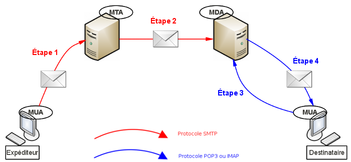

Je vous souhaite la bienvenue dans mon tout premier tutoriel pour le Site du Zéro !
Ensemble, nous allons apprendre à utiliser quelques modules du langage Perl.
À travers ce cours, vous aurez l'occasion d'appréhender 4 parties.
Interaction avec une base de données (module DBI).
Envoyer et recevoir des e-mails (modules Net::SMTP, Net::POP3, Net::IMAP::Simple et MIME::Lite).
Interaction avec un serveur FTP (module Net::FTP).
Gérer correctement les paramètres de ses scripts (modules Getopt::Std et Getopt::Long).
Je me permets de faire quelques mises en garde avant que vous ne commenciez la lecture de ce tutoriel. Même si des rappels sur le langage Perl seront faits régulièrement, il est quand même indispensable de maîtriser les bases de ce langage, ainsi que les bases de la programmation en général.
Pas de panique concernant l'apprentissage de chaque module, on part bien sûr de zéro !
Avant de commencer à coder en Perl, nous allons devoir installer quelques outils, à savoir un SGBD (Système de Gestion de Base de Données), le module DBI et enfin les pilotes du SGBD choisi.
Cette première partie sera donc entièrement consacrée à l'installation de ces outils, pour que vous puissiez étudier la suite du tutoriel en toute tranquillité, dans les meilleures conditions. ;)
Comme je le disais un peu plus haut dans l'introduction de ce chapitre, nous devons installer un SGBD, c'est-à-dire un soft permettant de gérer une ou plusieurs bases de données.
La grande question qui revient souvent est :
Lequel choisir ?
Malheureusement, il n'y a pas de bonne ni de mauvaise réponse... En effet, il en existe des dizaines, et chacun d'entre eux possède son lot d'avantages et d'inconvénients. Le choix se fait en fonction de l'utilisateur et de ses besoins.
Voici par exemple une liste non exhaustive des SGBD les plus utilisés :
PostgreSQL ;
MySQL ;
Access ;
Oracle ;
SQL Server ;
etc.
Pour la suite de ce tutoriel, j'ai choisi d'utiliser MySQL, et ce, pour plusieurs raisons.
Il est gratuit.
Il est très répandu.
Il est simple d'utilisation pour ceux qui débutent dans ce domaine.
La plupart d'entre vous l'utilisent déjà.
Afin d'associer une jolie interface graphique à notre MySQL, j'ai choisi de travailler avec l'outil XAMPP pour les raisons suivantes.
Il est gratuit.
Il est facile d'utilisation.
Il supporte les CGI Perl.
Installation
En ce qui concerne l'installation de XAMPP, je me permets de vous diriger vers le tutoriel de M@teo21 ici (pas la peine de faire double emploi alors que tout est déjà très bien expliqué ! ).
Maintenant que ce premier outil est installé, je vous propose de passer à l'installation des modules Perl que sont DBI et DBD !
Dans cette partie, nous allons voir ensemble comment installer le module DBI (DataBase Interface).
À quoi peut bien servir ce module ?
Pour faire extrêmement simple, ce module est l'outil qui va nous permettre d'interagir avec notre base de données. Par interagir, j'entends effectuer différentes opérations comme :
se connecter ;
lire des données ;
ajouter des données ;
supprimer des données ;
modifier des données ;
etc.
Un des gros avantages de ce module, c'est qu'il est complètement indépendant du SGBD que l'on utilise. Ainsi, même si vous n'utilisez pas MySQL, vous pouvez quand même lire la suite de ce tutoriel ! :p
Installation sous Linux
Il existe deux façons d'installer ce module : une installation manuelle et une installation automatique. Je vous laisse choisir celle que vous préférez !
Installation manuelle
Avant d'installer ce module, vous vous doutez bien qu'il va falloir le télécharger ! Pour ce faire, rendez-vous ici, puis cliquez sur le tout premier lien comme le montre la capture d'écran ci-dessous.
Regardez ensuite le côté droit de la page, puis cliquez sur Download afin de télécharger l'archive.
Un fois l'archive enregistrée sur votre ordinateur, ouvrez votre plus beau terminal et tapez successivement les commandes suivantes :
tar -xzvf DBI-xxx.tar.gz
cd DBI-xxx/
perl Makefile.PL
make
sudo make install
Installation automatique
Commencez par ouvrir un terminal, puis tapez la commande suivante :
sudo cpan
Après avoir saisi votre mot de passe, vous devriez avoir une nouvelle ligne dans l'invite de commandes de la forme :
cpan[1]>
Il vous suffit alors de lancer l'installation du module grâce à la commande :
install DBI
Installation sous Windows
Si vous utilisez Active Perl, ouvrez un terminal, puis tapez la commande suivante :
ppm
Vous devriez alors avoir une nouvelle ligne dans l'invite de commandes de la forme :
PPM>
Il vous suffit alors de lancer l'installation du module grâce à la commande :
install DBI
Félicitations, vous venez d'installer votre premier module ! Passons immédiatement à l'installation du dernier outil !
Maintenant que MySQL et le module DBI sont installés, nous allons devoir installer les pilotes de MySQL.
Les pilotes se trouvent dans le module DBD::mysql (DataBase Driver MySQL).
À noter que si vous n'utilisez pas MySQL, vous devez bien évidemment installer les pilotes du SGBD que vous utilisez. Il s'agira donc du module DBD::SGBD. Par exemple :
DBD::Pg pour PostgreSQL ;
DBD::Oracle pour Oracle ;
etc.
Installation sous Linux
Tout comme pour le module DBI, il est possible de procéder à une installation manuelle ou automatique.
Installation manuelle
Comme précédemment, nous allons commencer par télécharger l'archive. Pour ça, rendez-vous ici et cliquez sur le premier lien, comme dans la capture d'écran ci-dessous :
Rendez-vous ensuite sur le côté droit de la page afin de lancer la téléchargement.
Un fois l'archive enregistrée sur votre ordinateur, ouvrez votre plus beau terminal et tapez successivement les commandes suivantes :
tar -xzvf DBD-mysql-xxx.tar.gz
cd DBD-mysql-xxx/
perl Makefile.PL
make
sudo make install
Installation automatique
Commencez par ouvrir un terminal, puis tapez la commande suivante :
sudo cpan
Après avoir saisi votre mot de passe, vous devriez avoir une nouvelle ligne dans l'invite de commandes de la forme :
cpan[1]>
Il vous suffit alors de lancer l'installation du module grâce à la commande :
install DBD::mysql
Installation sous Windows
Si vous utilisez Active Perl, ouvrez un terminal, puis tapez la commande suivante :
ppm
Vous devriez alors avoir une nouvelle ligne dans l'invite de commandes de la forme :
PPM>
Il vous suffit alors de lancer l'installation du module grâce à la commande :
install DBD-mysql
Voilà, les pilotes pour MySQL sont maintenant installés. Nous allons enfin pouvoir commencer l'apprentissage des différentes commandes Perl à proprement parler !
Linuxien, vous avez un problème ?
Il n'est pas impossible que certains d'entre vous rencontrent un problème et obtiennent un message d'erreur lors de l'installation des pilotes MySQL.
Surtout pas de panique, je suis là pour vous expliquer comment régler tout ça !
Il s'agit en réalité d'une dépendance entre les paquets. Avant de tenter à nouveau l'installation du pilote, vous devez installer les paquets libmysqlclient16 et libmysqlclient16-dev (qui, au passage, installeront les paquets libmysqlclient-dev et mysql-common automatiquement dans un souci de dépendance).
Pour ce faire, tapez dans votre terminal la commande suivante :
Je vous propose d'utiliser, dans la suite de ce tutoriel, une base de données modélisant un (tout petit) concessionnaire automobile répondant au nom de zVoitures.
Avant de vous jeter sur le schéma relationnel de notre base de données, je vous invite à lire attentivement le petit texte ci-dessous, qui va vous aider à bien comprendre les différents liens entres les tables.
Citation
Notre concessionnaire possède un certain nombre de voitures. Chaque voiture réunit diverses caractéristiques telles que sa marque (Renault, Peugeot, BMW…), son modèle (Clio, 405, Z4…), ainsi que son type (break, sport, familiale, 4x4…). Chaque voiture peut être un véhicule neuf ou d'occasion, et possède donc un certain kilométrage. Pour chaque véhicule, on connaît également l'année de mise en service, ainsi que le prix auquel on souhaite le vendre.
Notre concessionnaire embauche bien évidemment des vendeurs dont on connaît le nom et le prénom.
Puisqu'il faut faire des statistiques pour comparer le "rendement" de chaque vendeur, toutes les ventes sont enregistrées. Ainsi, pour chaque vente, on connaît la date, le vendeur, la voiture et le prix final de la vente (on sait tous qu'il est toujours possible d'avoir des réductions :p ).
Les clients ne nous intéressent pas ici.
Finalement, voici le schéma relationnel que nous obtenons :
… Ou encore celui-ci, lorsque les types sont précisés :
Pour être certain que vous et moi commencions ce tutoriel avec la même base de données, je vous propose le petit jeu d'essai suivant :
numMarque
nomMarque
1
ZeroMobile
2
Renault
3
Peugeot
4
Ferrari
5
Porsche
6
Fiat
7
Ford
8
Tata Motor
9
Smart
10
Citroen
numModele
nomModele
1
Super Zero
2
Clio
3
Twingo
4
405
5
1005
6
Punto
7
Ka
8
Cayenne
9
Enzo
10
Fiesta
11
205 cc
12
Fuego
13
911
14
R19
15
R5
16
Laguna
17
C3
18
Saxo
19
Picasso
20
Clio II
numType
nomType
1
Coupe - Cabriolet
2
4x4
3
Break
4
Familiale
5
Sport
6
Autre
7
Debutant
8
Citadine
numVendeur
nomVendeur
prenomVendeur
1
89
Wapiti
2
MANE
Batte
3
BONO
Jean
4
ZOR
Zo
5
TUX
Patrick
numVoiture
numModele
numMarque
numType
annee
occasion
kilometrage
prixTheorique
1
1
1
7
2010
0
0
0
2
2
2
8
1995
1
18 745
2 000
3
2
3
8
2001
0
0
9 999
4
3
11
1
2009
0
0
15 999
5
4
9
5
2005
0
0
75 000
6
10
17
8
2007
1
69 748
1 500
7
5
8
5
1990
1
27 231
49 000
8
7
10
4
1983
1
231 456
499
9
2
20
8
2010
0
0
13 999
10
2
20
8
2010
0
0
13 999
11
10
19
4
1999
1
231 569
4 999
12
5
13
5
1998
0
0
35 999
13
2
15
8
1983
1
538 956
2
14
2
14
8
1989
1
214 659
999
15
7
7
8
1993
1
178 123
1 500
numVoiture
numVendeur
prixReel
dateVente
1
5
0
2010-01-02
15
2
1 299
2010-01-06
2
4
1 999
2010-02-15
10
1
12 999
2010-03-03
13
3
1,99
2010-05-17
Pour ceux qui sont choqués par les prix, je tiens à préciser que le but n'est en aucun cas d'être réaliste ! Je n'ai aucune idée du prix des voitures. :lol:
Nous y sommes presque. Il reste encore une étape avant de commencer à coder nos premières requêtes SQL !
Cette dernière étape consiste tout simplement à importer dans MySQL le code que je vous ai donné. Cette étape n'a rien de bien compliqué, il suffit de suivre les quelques explications qui suivent !
Commencez par cliquer dans MySQL sur le logo de la petite maison dans l'onglet de gauche. Cliquez ensuite sur l'onglet "SQL" comme sur la capture ci-dessous :
Collez le script donné précédemment dans l'espace prévu à cet effet, puis cliquez sur le bouton "Exécuter" en bas de page :
Vous devriez alors avoir un message vous indiquant que tout s'est correctement déroulé ! Si ce n'est pas le cas, je ne peux que vous encourager à faire un nouveau copier-coller du script !
Maintenant que les préparatifs sont (enfin) terminés, nous pouvons nous attaquer à la programmation en Perl ! :pirate:
Dans les chapitres précédents, nous avons pris le temps de comprendre la base de données sur laquelle nous allons travailler par la suite dans ce tutoriel.
Il est maintenant temps de se jeter à l'eau et d'attaquer la programmation en Perl. Dans ce chapitre, nous allons voir ensemble le code minimal qu'il faudra écrire lorsque vous manipulerez des bases de données en Perl, à savoir la connexion et la déconnexion.
Cette première partie va nous permettre de détailler les différentes parties du script minimal, nécessaire à notre connexion à la base "Zvoitures".
L'en-tête du script
Puisqu'il faut bien commencer par le début, nous allons tout d'abord décrire l'en-tête de notre script de connexion.
Si vous avez déjà eu l'occasion de travailler avec des modules, cette partie ne devrait pas vous poser de problème. Les autres vont devoir apprendre un nouveau mot-clef : use . Son utilisation est toute simple. On indique en fait à notre script que l'on souhaite utiliser le module DBI (dans notre cas). Ainsi, le mot use sera suivi du module que l'on souhaite utiliser.
Voici donc l'en-tête que chacun doit avoir :
#!/usr/bin/perl -w
use strict;
use DBI; #Permet d'utiliser le module DBI
À noter que l'utilisation de "strict" n'est pas une obligation, mais le langage Perl étant très permissif, son utilisation permet aux débutants (et aux autres :p ) de coder de manière plus propre.
Les paramètres
Vous l'imaginez bien, se connecter à une base de données nécessite un certain nombre d'informations. Plutôt que de vous les faire deviner, en voici la liste :
les pilotes du SGBD ;
le nom de la base de données ;
l'endroit où se trouve la base de données ;
le login ;
le mot de passe.
Dans un premier temps, je vous propose de stocker ces différentes informations dans des variables.
Voici ce que vous devez obtenir :
my $base = 'Zvoitures'; #Le nom de la base
my $host = '127.0.0.1'; #L'endroit où est stockée la base (ici c'est localhost)
my $login = 'root'; #Le login utilisateur
my $mdp = ''; #Le mot de passe (ici, il n'y en a pas)
La connexion
Félicitations ! Si vous êtes arrivés jusqu'ici, c'est vraiment que votre motivation est inébranlable ! Nous allons enfin pouvoir étudier la fonction qui nous permet de nous connecter à notre base de données.
Il s'agit de la fonction connect() de l'objet DBI. Cette fonction prend pour paramètres les différentes informations que nous avons stocké précédemment dans des variables.
Voici donc la fameuse connexion :
my $dbd = DBI->connect("dbi:mysql:dbname=$base;host=$host;", $login, $mdp)
or die 'Impossible de se connecter à la base de données : '.DBI::errstr;
Les mots clefs or die permettent de gérer les éventuelles erreurs de connexion à la base de données. Ainsi, s'il y a un problème avec la connexion, le or die permet d'arrêter le programme et d'afficher le message d'erreur. La variable DBI::errstr permet d'afficher à l'écran la raison exacte du problème.
Si la connexion se fait sans problème, vous n'aurez rien de spécial à l'écran.
À noter que les pilotes utilisés constituent le premier paramètre que l'on indique à notre fonction connect() . N'hésitez surtout pas à adapter la syntaxe dans le cas où vous n'utiliseriez pas MySQL !
Je crois qu'on a fait le tour. Vous êtes maintenant prêts à essayer votre connexion ! ;)
Je n'arrive pas à me connecter ! Que dois-je faire ?
Pas de panique ! Je vous propose de voir les points qui sont peut-être à l'origine de votre problème.
Le script complet
Peut-être n'avez-vous pas réussi à reconstituer le puzzle du chapitre précédent. C'est pourquoi je propose de vous fournir le code complet du script de connexion. N'hésitez pas à le copier-coller, afin de vérifier si le problème ne vient pas de là !
Voici le monstre :
#!/usr/bin/perl -w
use strict;
use DBI;
#Les paramètres
my $base = 'Zvoitures';
my $host = '127.0.0.1';
my $login = 'root';
my $mdp = '';
#La connexion
my $dbd = DBI->connect("dbi:mysql:dbname=$base;host=$host;", $login, $mdp)
or die 'Impossible de se connecter à la base de données : '.DBI::errstr;
MySQL est-il lancé ?
Peut-être avez-vous simplement oublié de démarrer MySQL ?
Utilisateurs de Windows
Pour les utilisateurs de Windows, vérifiez que le logo de WAMPP apparaît bien en bas à droite dans la barre des tâches. Si ce n'est pas le cas, n'hésitez surtout pas à relancer le soft via le menu "Démarrer".
Utilisateurs de Mac
Comme pour les utilisateurs de Windows, je vous invite à lancer le logiciel via votre dossier "Applications".
Utilisateurs de Linux
Vous pouvez vérifier l'état de fonctionnement via la commande :
sudo /opt/lampp/lampp status
Deux types de réponses peuvent alors apparaître :
Version: XAMPP for Linux 1.7.3a
Apache is running.
MySQL is running.
ProFTPD is running.
Cette réponse signifie que tout semble fonctionner et que le problème vient d'ailleurs.
Apache is not running.
MySQL is not running.
ProFTPD is not running
Cette seconde réponse indique que les différents outils (dont MySQL) ne tournent pas. N'oubliez surtout pas de les lancer avec :
sudo /opt/lampp/lampp start
Vérifier le mot de passe et l'utilisateur
Je vous encourage également à vérifier vos identifiants de connexion à la base de données.
Pour ça, ouvrez MySQL et allez faire un tour dans l'onglet "Privilèges". Vous devriez alors avoir un tableau des utilisateurs avec pour chacun son nom et son mot de passe.
Vérifier le "host"
Certains d'entre vous auront peut-être une erreur parlant de socket.
Assurez-vous d'avoir bien stocké dans votre variable $host la chaîne de caractères "127.0.0.1" et non "localhost".
Même si ces 2 mots sont synonymes pour les informaticiens, ils ne le sont visiblement pas pour MySQL. Très honnêtement, je ne suis pas capable de vous expliquer pourquoi. Peut-être que quelqu'un de bien plus connaisseur en réseaux que moi pourra vous l'expliquer sur le forum.
Avant de montrer la fonction qui va vous permettre de fermer votre connexion proprement, je voudrais vous dire quelques mots sur la variable $dbd .
Cette variable est ce que l'on appelle un descripteur de base. Ce descripteur est attaché à la base de données sur laquelle nous travaillons grâce à la fonction connect() du module DBI.
À noter que j'ai nommé ma variable $dbd par convention, mais vous pouvez bien entendu lui donner le nom que vous souhaitez. ;)
C'est d'ailleurs ce descripteur qui va nous permettre immédiatement de nous déconnecter de la base de données et par la suite de faire des requêtes SQL.
Se déconnecter d'une base de données en Perl est extrêmement simple, puisqu'une seule instruction suffit.
Nous allons utiliser la méthode disconnect de notre descripteur de base.
Voici alors ce que nous obtenons :
$dbd->disconnect;
Comme vous pouvez le constater, la déconnexion se passe de commentaire. Il suffit de placer cette instruction à l'endroit de votre script où vous souhaitez vous déconnecter pour l'être instantanément !
Maintenant que vous savez ouvrir et fermer une connexion, je vous propose de s'attaquer à l'exécution de nos premières requêtes !
Prenons un exemple. Je vous propose de travailler sur la requête suivante :
SELECT * FROM MARQUE
Préparer sa requête
Avant d'exécuter la requête, nous devons la préparer. Pour ça, nous allons utiliser la fonction prepare() de notre descripteur de base en lui précisant notre requête en tant que paramètre.
Pour préparer les requêtes, on retrouve généralement 2 types de syntaxe. Soit en un étape, soit en 2 étapes. Voici tout de suite un exemple :
#Syntaxe en 1 ligne
my $prep = $dbd->prepare('SELECT * FROM MARQUE');
#Syntaxe en 2 lignes
my $requete = 'SELECT * FROM MARQUE';
my $prep = $dbd->prepare($requete);
Ici, je viens donc de préparer la requête me permettant de sélectionner tous les champs de la table MARQUE de notre base de données.
Jusqu'ici, il n'y a rien de bien compliqué, cependant, il ne faut pas confondre les notions de préparation de d'exécution. Ici, nous préparons notre requête à être exécuter, mais nous ne pouvons en aucun cas en extraire un quelconque résultat.
Vous pouvez constater l'apparition d'une nouvelle variable : $prep . C'est cette variable que l'on utilisera dans la suite de notre programme pour exécuter notre requête et en exploiter les résultats.
Sachez également qu'il est une nouvelle fois possible de gérer d'éventuelles exceptions grâce aux mots-clefs or die .
Voici d'ailleurs un exemple de syntaxe :
my $requete = 'SELECT * FROM MARQUE';
my $prep = $dbd->prepare($requete)
or die 'Impossible de préparer la requête : '.$dbd->errstr;
Le fait de concaténer notre message d'erreur à la valeur retourner par la méthode errstr de notre descripteur de base nous permet de connaître avec précision l'origine du dysfonctionnement.
Exécuter la requête
Maintenant que notre requête est préparée, nous allons pouvoir passer à son exécution. Pour ça, nous allons utiliser la méthode execute à partir de la variable qui contient notre requête préparée.
Puisqu'un exemple est souvent plus parlant, je vous propose un :
$prep->execute;
Comme à chaque fois, il est possible de gérer les éventuelles exceptions :
$prep->execute
or die 'Impossible d\'exécuter la requête : '.$prep->errstr;
Terminer sa requête
Sans forcément rentrer dans les détails, il faut que vous sachiez qu'une exécution de requête prend de la place dans la mémoire de votre ordinateur. Il est donc nécessaire, lorsqu'on ne souhaite plus utiliser les résultats de la requête, de libérer cette mémoire réservée.
Pour ça, nous allons utiliser la fonction finish .
Voici comment procéder :
$prep->finish;
Pour résumer
Afin de résumer ce que nous venons de voir au cours de ce chapitre, je propose de voir le code complet :
#!/usr/bin/perl
use strict;
use DBI;
my $base = 'Zvoitures';
my $hote = '127.0.0.1';
my $login = 'root';
my $mdp = '';
my $dbd = DBI->connect( "dbi:mysql:dbname=$base;host=$hote;",$login, $mdp)
or die 'Connexion impossible à la base de données : '.DBI::errstr;
my $requete = 'SELECT * FROM MARQUE';
my $prep = $dbd->prepare($requete)
or die 'Impossible de préparer la requête : '.$dbd->errstr;
$prep->execute
or die 'Impossible d\'exécuter la requête : '.$prep->errstr;
$prep->finish;
$dbd->disconnect;
Oui mais moi, je n'aime pas écrire mes requêtes en ligne, j'aime bien faire des blocs. Ce n'est pas possible ?
N'oubliez jamais que vous utilisez Perl, et qu'il est toujours possible d'utiliser des marqueurs. Ainsi, il est tout à fait possible d'écrire vos requêtes sous la forme d'un bloc comme il est de convention d'écriture dans la plupart des SGBD :
my $requete = <<"SQL";
SELECT *
FROM MARQUE
SQL
Cette écriture sera d'autant plus lisible lorsque vous aurez besoin d'écrire de grosses requêtes avec tout un tas de jointures.
Maintenant que nous venons de voir comment faire une requête, je vous propose de voir comment exploiter les résultats renvoyés.
Exploiter les résultats
Nous allons voir ici 2 cas, ce qui nous permettra de rencontrer et manipuler différentes fonctions.
Cas no 1 : il s'agit du cas où vous connaissez le nombre d'arguments.
Cas no 2 : il s'agit du cas où vous ne connaissez pas le nombre d'arguments.
Cas no 1
Reprenons la requête précédente :
SELECT * FROM MARQUE
Puisque nous connaissons la structure de notre table de données, nous pouvons transformer notre requête afin d'en détailler les différents champs que nous voulons sélectionner.
Voici ce que ça donne :
SELECT numMarque, nomMarque FROM MARQUE
Si vous n'êtes pas convaincus que ces 2 requêtes sont équivalentes, je vous invite à les exécuter dans votre SGBD. ;)
Il existe une multitude de manières d'exploiter les données renvoyées par une requête SQL. Je vous propose de voir la méthode la plus courante.
Puisque bien souvent un bout de code vaut mieux que de longues explications, voici tout de suite comment faire :
Quelques explications : La méthode execute renvoie un tableau qui contient toutes les lignes qui ont été sélectionnées par notre requête. La méthode fetchrow_array est une fonction qui renvoie une ligne de ce fameux tableau. C'est d'ailleurs parce que cette fonction nous renvoie un tableau que nous pouvons utiliser une liste pour recueillir nos résultats.
La boucle while quant à elle, nous permet de réaliser une boucle sur les lignes du tableau contenant les résultats et ainsi, d'exploiter toutes les lignes et donc tous les résultats sans en oublier.
Si l'on reprend le script précédent, ces 3 lignes se placent juste avant l'instruction $prep->finish.
Voici tout de suite l'affichage produit par ce script :
> perl requete.pl
1. ZeroMobile
2. Renault
3. Peugeot
4. Ferrari
5. Porsche
6. Fiat
7. Ford
8. Tata Motor
9. Smart
10. Citroen
Cas no 2
Pour rappel, il s'agit du cas où nous ne connaissons pas le nombre d'arguments.
Reprenons donc notre requête sous sa première forme :
SELECT * FROM MARQUE
Dans ce second cas, utiliser une liste pour recueillir les résultats n'a pas de sens, puisque nous ne connaissons pas le nombre de champs renvoyés. Il conviendra alors d'utiliser un tableau.
Bien sûr, l'exploitation sera différente du premier cas. Afin d'afficher les résultats, nous allons être obligés d'utiliser une nouvelle boucle : la boucle foreach . Nous allons donc imbriquer 2 boucles afin d'exploiter les résultats de notre requête.
Voyons tout de suite comment faire :
while (my @data = $prep->fetchrow_array ) {
foreach my $elt (@data) {
print $elt.' ';
}
print "\n";
}
En exécutant ce script dans votre terminal, vous devriez alors avoir :
> perl requete.pl
1 ZeroMobile
2 Renault
3 Peugeot
4 Ferrari
5 Porsche
6 Fiat
7 Ford
8 Tata Motor
9 Smart
10 Citroen
Cette méthode peut se révéler intéressante dans le cas d'une requête SQL ayant énormément de champs dans le SELECT afin de rendre le code de votre script plus clair.
Compter le nombre de lignes renvoyées
Avez-vous une idée sur le moyen d'obtenir le nombre de lignes renvoyées par votre requête SQL ?
Vous avez 10 minutes pour y réfléchir ! :p
Tic… Tac… Tic… Tac…
Voyons ensemble les 3 réponses qui reviennent le plus souvent.
Incrémenter une variable dans la boucle while .
Faire une autre requête avec un COUNT(*) .
Utiliser une fonction que tu vas nous révéler.
L'idée du compteur à incrémenter dans la boucle while n'est pas une mauvaise idée, mais la bonne réponse est bien évidemment la dernière !
En effet, il existe une fonction qui permet de connaître le nombre de lignes retournées par notre requête. La voici sans plus attendre :
$prep->rows
Ainsi, si on ajoute cette ligne à notre script :
print 'Il existe '.$prep->rows.' marques de voitures.';
Nous allons obtenir à l'écran :
Il existe 10 marques de voitures.
Le script complet
Comme à chaque fois en fin de chapitre, voici le script complet de ce que nous avons vu :
#!/usr/bin/perl
use strict;
use DBI;
my $base = 'Zvoitures';
my $hote = '127.0.0.1';
my $login = 'root';
my $mdp = '';
my $dbd = DBI->connect("dbi:mysql:dbname=$base;host=$hote;",$login, $mdp)
or die 'Connexion impossible à la base de données : '.DBI::errstr;
my $requete = 'SELECT * FROM MARQUE';
my $prep = $dbd->prepare($requete)
or die 'Impossible de préparer la requête : '.$dbd->errstr;
$prep->execute
or die 'Impossible d\'exécuter la requête : '.$prep->errstr;
while (my($numMarque, $nomMarque) = $prep->fetchrow_array ) {
print $numMarque.'. '.$nomMarque."\n";
}
print 'Il existe '.$prep->rows.' marques de voitures.';
$prep->finish;
$dbd->disconnect;
Vous avez acquis un certain nombre de connaissances, c'est pourquoi je vous propose d'ores et déjà un petit TP !
Je vous propose d'ores et déjà un petit exercice qui va nous permettre de réviser les notions vues au cours des chapitres précédents, mais qui va également nous permettre de voir de nouvelles fonctions qui pourront s'avérer utiles dans vos futurs programmes. ;)
Le but de ce TP est simple : faire un script Perl qui permette de simuler la commande SQL.
DESCRIBE VENTE;
Bien entendu, notre commande sera bien plus simplifiée et se contentera d'afficher :
le nom des champs ;
le type des champs ;
si le champ peut être NULL ou non.
Voici un aperçu de ce que devra faire votre script :
> perl describe_vente.pl
------------------------------------------------
| Champ | Type | Null |
------------------------------------------------
| numVoiture | integer | non |
| numVendeur | integer | non |
| prixReel | decimal | non |
| dateVente | date | non |
------------------------------------------------
Une petite aide
Bien évidemment, vous n'avez pas à l'heure actuelle tous les outils pour pouvoir réaliser ce TP. C'est pourquoi je vais vous décrire quelques fonctions qui vous seront sans aucun doute indispensables pour mener à bien ce petit exercice.
La méthode NAME
Cette méthode retourne une référence vers un tableau de noms de colonnes et s'utilise de la manière suivante :
$prep->{'NAME'};
La méthode TYPE
Cette méthode retourne une référence vers un tableau de types de colonnes. Les valeurs possibles sont :
1 si la colonne est de type Char ;
2 si la colonne est de type Numeric ;
3 si la colonne est de type Decimal ;
4 si la colonne est de type Integer ;
5 si la colonne est de type Smallint ;
6 si la colonne est de type Float ;
7 si la colonne est de type Real ;
8 si la colonne est de type Double ;
9 si la colonne est de type Date ;
10 si la colonne est de type Time ;
11 si la colonne est de type Timestamp ;
12 si la colonne est de type Varchar ;
-1 si la colonne est de type Longvarchar ;
-2 si la colonne est de type Binary ;
-3 si la colonne est de type Varbinary ;
-4 si la colonne est de type Longvarbinary ;
-5 si la colonne est de type Bigint ;
-6 si la colonne est de type Tinyint ;
-7 si la colonne est de type Bit ;
-8 si la colonne est de type Wchar ;
-9 si la colonne est de type Wvarchar ;
-10 si la colonne est de type Wlongvarchar.
Elle s'utilise de la manière suivante :
$prep->{'TYPE'};
La méthode NULLABLE
Cette méthode retourne une référence vers un tableau de valeurs qui indiquent si les colonnes peuvent être NULL ou non. Les valeurs possibles sont :
une chaine vide si la colonne ne peut pas être NULL ;
Je vous fais part de ma solution. Bien évidemment, il ne s'agit pas de LA solution !
#!/usr/bin/perl
use strict;
use Switch;
use DBI;
#On prépare la connexion
my $base = 'Zvoitures';
my $hote = '127.0.0.1';
my $login = 'root';
my $mdp = '';
#On se connecte
my $dbd = DBI->connect("dbi:mysql:dbname=$base;host=$hote;",$login, $mdp)
or die 'Connexion impossible à la base de données : '.DBI::errstr;
#On prépare la requête et on l'exécute
my $requete = 'SELECT * FROM VENTE';
my $prep = $dbd->prepare($requete)
or die 'Impossible de préparer la requête : '.$dbd->errstr;
$prep->execute
or die 'Impossible d\'exécuter la requête : '.$prep->errstr;
#On récupère les noms des colonnes
my $name = $prep->{'NAME'};
#On récupère les types des colonnes
my $type = $prep->{'TYPE'};
#On regarde si c'est null ou pas
my $null = $prep->{'NULLABLE'};
#On initialise le compteur
my $i = 0;
#On affiche l'en-tête du tableau
print "-----------------------------------------------------------------\n";
print "|\tChamp\t\t|\tType\t\t|\tNull\t|\n";
print "-----------------------------------------------------------------\n";
foreach my $elt (@$name) {
#On affiche les noms
print "|\t" . $$name[$i] . "\t|\t";
#OU
#print "|\t" . $elt . "\t|\t";
#On affiche les types
switch ($$type[$i]) {
case 1 { print 'char' }
case 2 { print 'numeric' }
case 3 { print 'decimal' }
case 4 { print 'integer' }
case 5 { print 'smallint' }
#...
case -10 { print 'Wlongvarchar' }
}
print "\t\t|\t";
#On affiche si c'est NULL ou pas
if($$null[$i] == 1) {
print 'oui';
}
else {
print 'non';
}
print "\t|\n";
$i++;
}
#Fin de tableau
print "-----------------------------------------------------------------\n";
#On libère la mémoire et on se déconnecte
$prep->finish;
$dbd->disconnect;
Si vous avez des problèmes, des doutes ou des questions, je vous encourage fortement à les poser sur le forum de ce site !
Afin d'exécuter les requêtes différentes de celles de sélection, nous allons voir qu'il y a une autre syntaxe à utiliser.
Comme pour les requêtes de sélection, je vous propose de travailler sur un exemple. J'ai choisi une requête d'insertion :
INSERT INTO MARQUE (nomMarque) VALUES ('BMW')
Cette requête permet d'ajouter la marque BMW dans notre base de données.
Contrairement aux requêtes de sélection, nous n'allons plus utiliser les fonctions prepare() puis execute afin d'exécuter nos requêtes. En effet, nous allons directement lancer leur exécution via une nouvelle méthode : la méthode do() .
La syntaxe n'étant pas bien compliqué, je vous propose de voir immédiatement un exemple pratique :
my $requete = 'INSERT INTO MARQUE (nomMarque) VALUES (\'BMW\')';
$dbd->do($requete)
or die 'Impossible d\'exécuter la requête : '.$dbd->errstr;
Comme vous pouvez le constater, la méthode do() prend pour paramètre votre requête (comme le faisait la méthode prepare() dans le chapitre précédent).
Ce qu'il faut maintenant savoir, c'est que l'on privilégiera l'utilisation de la méthode do() pour toutes les autres que les requêtes de sélection, comme par exemple les requêtes suivantes :
INSERT INTO MARQUE (nomMarque) VALUES ('BMW');
UPDATE VENTE SET numVendeur = 5 WHERE numVoiture = 15;
DELETE FROM VENTE WHERE numVendeur = 5;
CREATE TABLE...
Comment compter le nombre de lignes affectées par ces requêtes, alors ?
Je dois avouer que vous venez de toucher un point sensible...
En réalité, cette nouvelle syntaxe ne nous le permet pas. Si vous souhaitez compter le nombre de lignes affectées par une requête de suppression ou de mise à jour, vous devrez utiliser la syntaxe des requêtes de sélection.
Je vous propose d'ailleurs de voir immédiatement deux exemples.
Exemple 1
Voici la requête que nous allons exécuter dans cet exemple :
UPDATE VENTE SET numVendeur = 5 WHERE numVoiture = 15
Comme il n'y pas de nouveauté, je vous propose de jeter immédiatement un coup d'œil au code :
my $requete = 'UPDATE VENTE SET numVendeur = 5 WHERE numVoiture = 15';
my $prep = $dbd->prepare($requete)
or die 'Impossible de préparer la requête : '.$dbd->errstr;
$prep->execute
or die 'Impossible d\'exécuter la requête : '.$prep->errstr;
print 'Ligne(s) modifiée(s) : '.$prep->rows;
Lors de l'exécution de ce script, vous devriez alors obtenir l'affichage :
> perl requete.pl
Ligne(s) modifiée(s) : 1
Exemple 2
Voici la requête que nous allons exécuter dans cet exemple :
UPDATE VENTE SET numVendeur = 2 WHERE numVendeur = 5
Voyons immédiatement le code source :
my $requete = 'UPDATE VENTE SET numVendeur = 2 WHERE numVendeur = 5';
my $prep = $dbd->prepare($requete)
or die 'Impossible de préparer la requête : '.$dbd->errstr;
$prep->execute
or die 'Impossible d\'exécuter la requête : '.$prep->errstr;
print "Ligne(s) modifiée(s) : ".$prep->rows;
Lors de l'exécution de ce script, vous devriez alors obtenir l'affichage :
Je vous propose de faire un petit résumé de ce que nous avons vu jusqu'ici.
Les requêtes de sélection
Pour tout ce qui est requête de sélection, il conviendra de privilégier la syntaxe utilisant les méthodes prepare() et execute :
#!/usr/bin/perl
use strict;
use DBI;
my $base = 'Zvoitures';
my $hote = '127.0.0.1';
my $login = 'root';
my $mdp = '';
my $dbd = DBI->connect("dbi:mysql:dbname=$base;host=$hote;",$login, $mdp)
or die 'Connexion impossible à la base de données : '.DBI::errstr;
my $requete = 'SELECT * FROM MARQUE';
my $prep = $dbd->prepare($requete)
or die 'Impossible de préparer la requête : '.$dbd->errstr;
$prep->execute
or die 'Impossible d\'exécuter la requête : '.$prep->errstr;
while (my($numMarque, $nomMarque) = $prep->fetchrow_array ) {
print $numMarque.'. '.$nomMarque."\n";
}
print 'Il existe '.$prep->rows.' marques de voitures.';
$prep->finish;
$dbd->disconnect;
Les autres requêtes
Sans compter le nombre de lignes
Pour toutes les autres requêtes (DELETE , INSERT , UPDATE , DROP , CREATE …), il conviendra d'utiliser la syntaxe utilisant la méthode do() :
#!/usr/bin/perl
use strict;
use DBI;
my $base = 'Zvoitures';
my $hote = '127.0.0.1';
my $login = 'root';
my $mdp = '';
my $dbd = DBI->connect("dbi:mysql:dbname=$base;host=$hote;",$login, $mdp)
or die 'Connexion impossible à la base de données : '.DBI::errstr;
my $requete = 'DELETE FROM VENTE WHERE numVendeur = 5';
$dbd->do($requete)
or die 'Impossible d\'exécuter la requête : '.$dbd->errstr;
$dbd->disconnect;
En comptant le nombre de lignes
Si vous voulez absolument afficher le nombre de lignes affectées, Pour tout ce qui est requête de sélection, il conviendra de privilégier la syntaxe utilisant les méthodes prepare() et execute :
#!/usr/bin/perl
use strict;
use DBI;
my $base = 'Zvoitures';
my $hote = '127.0.0.1';
my $login = 'root';
my $mdp = '';
my $dbd = DBI->connect("dbi:mysql:dbname=$base;host=$hote;",$login, $mdp)
or die 'Connexion impossible à la base de données : '.DBI::errstr;
my $requete = 'DELETE FROM VENTE WHERE numVendeur = 5';
my $prep = $dbd->prepare($requete)
or die 'Impossible de préparer la requête : '.$dbd->errstr;
$prep->execute
or die 'Impossible d\'exécuter la requête : '.$prep->errstr;
print 'Ligne(s) modifiée(s) : '.$prep->rows;
$prep->finish;
$dbd->disconnect;
Le prochain chapitre étant un gros morceau, je vous conseille de prendre une petite pause afin de vérifier que vous avez bien assimilé ce que nous avons vu jusqu'ici !
Derrière ce mot barbare se cache en réalité la notion de requêtes "préparées".
Quand les utiliser ?
Les placeholders s'utilisent généralement dans 2 cas.
Cas no 1
Ce système de requête étant beaucoup plus rapide pour votre base de données, les placeholders seront privilégiés pour des requêtes exécutées plusieurs fois au cours de votre programme.
Cas no 2
Ce système est également privilégié lorsque vos requêtes sont exécutées en fonction de variables. En effet, ce système permet alors de sécuriser vos requêtes, et notamment de protéger efficacement vos programmes contre les injections SQL.
Considérons par exemple les 2 requêtes suivantes :
INSERT INTO MARQUE (nomMarque) VALUES ('Volvo');
INSERT INTO MARQUE (nomMarque) VALUES ('Skoda');
Ces 2 requêtes permettent d'ajouter dans la table MARQUE les marques Volvo et Skoda.
Avec vos connaissances actuelles, pour exécuter ces 2 requêtes, vous faites :
my $requete1 = 'INSERT INTO MARQUE (nomMarque) VALUES (\'Volvo\')';
my $prep = $dbd->do($requete1)
or die 'Impossible d\'exécuter la requête : '.$dbd->errstr;
my $requete2 = 'INSERT INTO MARQUE (nomMarque) VALUES (\'Skoda\')';
$prep = $dbd->do($requete2)
or die 'Impossible d\'exécuter la requête : '.$dbd->errstr;
Nous allons voir ensemble comment optimiser cette action via la mise en place d'un placeholder.
Écrire un placeholder
La mise en place d'un placeholder se découpe en 3 parties :
préparation de la requête ;
exécution de la requête ;
exploitation des résultats.
Préparation de la requête
C'est la première étape. Même si vous ne faites pas encore le parallèle, sachez que vous savez déjà préparer une requête. En effet, c'est ce que vous faites à chaque fois lors de vos requêtes de sélection, grâce à la fonction "prepare" du descripteur de base.
Pour utiliser un placeholder, vous devez donc préparer la requête. Contrairement aux requêtes de sélection, pour mettre en place un placeholder, la requête doit être écrite sans sa partie variable.
Je sais que ça peut paraître abstrait dit comme ça… En fait, la partie variable de la requête est remplacée par un marqueur. Ce marqueur est un point d'interrogation.
Voyons tout de suite ce que ça donne :
my $requete = 'INSERT INTO MARQUE (nomMarque) VALUES (?)';
my $prep = $dbd->prepare($requete)
or die 'Impossible de préparer la requête : '.$dbd->errstr;
Exécution de la requête
À cette étape, la requête est prête à être exécutée. C'est d'ailleurs ce que nous allons faire, en appelant la fonction "execute" que vous utilisez déjà pour vos requêtes de sélection.
Mais vous vous doutez bien qu'il y a une petite nouveauté !
Afin de reconstituer la partie variable de votre requête, il faut transmettre à la fonction "execute" la liste de vos paramètres.
Ainsi, pour ajouter la marque "Volvo", on fera :
$prep->execute('Volvo');
Il suffit de réitérer cette dernière ligne avec un autre argument pour exécuter l'autre requête d'insertion !
L'exploitation des résultats, quant à elle, ne change pas par rapport à ce que nous avons vu précédemment.
Pour résumer
Afin de résumer ce que nous avons vu jusqu'ici sur les placeholders, voici le code source complet pour les 2 requêtes d'insertion précédentes.
#!/usr/bin/perl
use strict;
use DBI;
my $base = 'Zvoitures';
my $hote = '127.0.0.1';
my $login = 'root';
my $mdp = '';
my $dbd = DBI->connect("dbi:mysql:dbname=$base;host=$hote;",$login, $mdp)
or die 'Connexion impossible à la base de données : '.DBI::errstr;
my $requete = 'INSERT INTO MARQUE (nomMarque) VALUES (?)';
my $prep = $dbd->prepare($requete)
or die 'Impossible de préparer la requête : '.$dbd->errstr;
$prep->execute('Volvo');
$prep->execute('Skoda');
$prep->finish;
$dbd->disconnect;
Avec des variables
Il est possible de réaliser les requêtes grâce à la concaténation, mais c'est TRÈS fortement déconseillé !
À la place, il est préférable d'utiliser les placeholders.
Par exemple, essayons de réaliser un script qui affiche l'identifiant dans la base de données d'un vendeur, dont le nom et le prénom sont renseignés par l'utilisateur.
#!/usr/bin/perl
use strict;
use DBI;
my $base = 'Zvoitures';
my $hote = '127.0.0.1';
my $login = 'root';
my $mdp = '';
print 'Saisir le prénom du vendeur : ';
my $prenom = <STDIN>;
chop($prenom);
print 'Saisir le nom du vendeur : ';
my $nom = <STDIN>;
chop($nom);
my $dbd = DBI->connect("dbi:mysql:dbname=$base;host=$hote;",$login, $mdp)
or die 'Connexion impossible à la base de données : '.DBI::errstr;
my $requete = 'SELECT numVendeur FROM VENDEUR WHERE nomVendeur = ? AND prenomVendeur = ?';
my $prep = $dbd->prepare($requete)
or die 'Impossible de préparer la requête : '.$dbd->errstr;
$prep->execute($nom, $prenom)
or die 'Impossible d\'exécuter la requête : '.$prep->errstr;
my ($num) = $prep->fetchrow_array;
$prep->finish;
print 'Le numéro du vendeur dans la base de données est : '.$num;
$dbd->disconnect;
En exécutant le script, vous devriez alors avoir l'affichage suivant :
> perl script_vendeur.pl
Saisir le prénom du vendeur : Batte
Saisir le nom du vendeur : MANE
Le numéro du vendeur dans la base de données est : 2
Bien que ce type de requêtes soit sécurisé, il est fortement conseillé d'ajouter une vérification des données saisies par l'utilisateur à l'aide par exemple d'expressions rationnelles !
Voilà, la partie sur le module DBI est maintenant terminée. J'espère que cette partie du tutoriel vous aura servi et surtout plu ! ;)
Ce chapitre d'introduction va nous permettre de faire quelques rappels quant au fonctionnement des mails, et voir grosso modo les différentes étapes qui permettent à un e-mail de passer de son expéditeur à son destinataire.
Avant de faire du Perl et de manipuler de nouveaux modules, nous allons nous intéresser au cycle de vie d'un e-mail.
Le voici d'ailleurs résumé en un schéma :

Comme vous pouvez le constater, le cycle de vie d'un e-mail s'articule autour de 4 étapes et beaucoup de vocabulaire. C'est pourquoi je vous propose de vous livrer immédiatement les définitions de tous ces mots étranges.
Ce chapitre va être assez lourd, prenez le temps de le lire plusieurs fois lentement afin d'assimiler tranquillement tout ce nouveau vocabulaire !
Protocole SMTP
SMTP est l'acronyme anglais de Simple Mail Transfer Protocol. Il s'agit du protocole de communication utilisé pour transférer le courrier électronique vers les serveurs de messagerie électronique.
Pour résumer, le protocole SMTP est le protocole utilisé pour envoyer un e-mail.
Protocole POP3
POP3 est l'acronyme anglais de Post Office Protocol Version 3. Il s'agit d'un protocole de communication utilisé pour récupérer les e-mails situés sur un serveur de messagerie.
Pour résumer, le protocole POP3 est un des protocoles utilisés pour recevoir un e-mail.
Protocole IMAP
IMAP est l'acronyme anglais de Internet Message Access Protocol. Il s'agit d'un protocole de communication utilisé pour récupérer les e-mails situés sur un serveur de messagerie.
Pour résumer, le protocole IMAP est un autre protocole utilisé pour recevoir un e-mail.
Quelle est alors la différence entre les protocoles POP3 et IMAP ?
Le protocole POP3 rapatrie généralement le courrier depuis le serveur vers le client de messagerie, permettant alors à un utilisateur de consulter ses e-mails en mode hors ligne (c'est-à-dire sans connexion internet). Une fois rapatriés, les e-mails disparaissent du serveur. Ainsi, lorsque un e-mail est rapatrié par un client de messagerie A, il ne sera pas possible par la suite de le rapatrier via un client de messagerie B.
Le protocole IMAP, quant à lui, permet de consulter les e-mails directement sur le serveur. Il permet alors de synchroniser plusieurs clients de messagerie. Ce protocole offre des fonctions que n'offre pas le protocole POP3, comme par exemple la possibilité de créer des dossiers afin de trier son courrier. Le protocole IMAP est d'ailleurs souvent utilisé dans les webmails.
MUA
MUA est l'acronyme anglais de Mail User Agent. Une traduction française pourrait être Client Messagerie. En effet, derrière ces mots barbares se trouve en réalité un logiciel que la plupart d'entre vous utilisent tous les jours ou presque.
Voici quelques noms de MUA parmi les plus connus :
Windows (Live) Mail ;
Thunderbird ;
Outlook (Express) ;
Kmail ;
Incredimail ;
…
Mais un MUA ne se présente pas uniquement sous la forme d'un logiciel installé sur la machine d'un utilisateur. Il peut également prendre la forme d'un Webmail. Pour ceux qui l'ignorent, un Webmail est une interface web permettant de consulter, envoyer ou supprimer des e-mails directement via son navigateur web.
Voici quelques noms de Webmail parmi les plus connus :
Gmail ;
Voila ;
Windows Live Hotmail ;
tous les webmails des différents fournisseurs d'accès à Internet (Orange, Free, etc.) ;
…
MTA
MTA est l'acronyme anglais de Mail Transfert Agent. Il s'agit d'un serveur SMTP qui a pour objectif de transférer l'e-mail en cours d'envoi au serveur de messagerie du destinataire.
MDA
MDA est l'acronyme anglais de Mail Delivery Agent. Il s'agit d'un serveur POP3 ou IMAP qui a pour objectif de remettre l'e-mail reçu à son destinataire.
Maintenant que vous êtes familiers avec le vocabulaire, nous allons pouvoir détailler les 4 étapes de vie d'un e-mail.
Je vous redonne le schéma afin que tout le monde l'ait sous les yeux.
Étape 1
Grâce à son MUA (client de messagerie ou webmail), l'expéditeur rédige un e-mail, puis clique ensuite sur le bouton "envoyer". Via le protocole SMTP, l'e-mail est alors confié à un MTA (serveur SMTP de l'expéditeur).
Étape 2
L'e-mail va alors subir un long voyage à travers l'internet. En effet, toujours via le protocole SMTP, c'est tout un tas de MTA qui vont le relayer jusqu'à ce qu'il arrive à bon port, à savoir un MDA (le serveur POP3 ou IMAP du destinataire).
Étape 3
Le destinataire clique alors sur le bouton "relever" de son MUA préféré (client de messagerie ou webmail). Une demande est alors faite auprès de son MDA afin de savoir s'il a reçu du courrier ou non. Cette demande se fait via le protocole POP3 ou IMAP suivant la configuration du MUA.
Étape 4
Dans le cas où un e-mail est sur le MDA, le serveur le transmet au MUA du destinataire afin que ce dernier puisse lire son e-mail. Cette dernière étape est une étape de réception, c'est pourquoi elle se fait via le protocole POP3 ou IMAP suivant la configuration du MUA du destinataire.
Au cours de cette partie, nous allons utiliser des modules issus de la bibliothèque libnet. Il s'agit de la bibliothèque qui couvre tout ce qui concerne le réseau (HTTP, DNS, etc.) en Perl. Elle va donc nous permettre, grâce à plusieurs fonctions et méthodes, d’interagir avec les serveurs auquel nous serons connectés, grâce à différentes des instructions.
Installation
Normalement, la bibliothèque libnet est installée par défaut avec votre version de Perl. Si pour une raison X ou Y, elle ne l'était pas, il est toujours possible de l'installer maintenant.
Installation sous Linux
Avant d'installer ce module, vous vous doutez bien qu'il va falloir le télécharger ! Pour ce faire, rendez-vous ici, puis téléchargez la dernière version disponible comme l'illustre la capture d'écran ci-dessous.
Un fois l'archive enregistrée sur votre ordinateur, ouvrez votre plus beau terminal et tapez successivement les commandes suivantes :
tar -xzvf libnet-xxx.tar.gz
cd libnet-xxx/
perl Makefile.PL
make
sudo make install
Installation sous Windows
Si vous utilisez Active Perl, ouvrez un terminal, puis tapez la commande suivante :
ppm
Vous devriez alors avoir une nouvelle ligne dans l'invite de commandes de la forme :
PPM>
Il vous suffit alors de lancer l'installation du module grâce à la commande :
install libnet
Maintenant que la bibliothèque libnet est installée, nous allons pouvoir passer à la suite !
Bien, maintenant que tout est compris, nous allons pouvoir attaquer la programmation en Perl.
Dans les prochains chapitres, toutes les commandes et manipulations seront expliquées. Cependant, si vous pensez encore avoir des soucis de compréhension, je vous conseille de relire ce premier chapitre ou de vous tourner vers ce tutoriel afin d'être certain de tout comprendre !
Comme je le disais dans le chapitre précédent, la bibliothèque libnet nous permet de donner des instructions aux serveurs auquel nous sommes connectés.
Pour dans le cas de l'envoi d'un e-mail, il est possible de découper le travail selon 5 étapes que voici :
Afin d'implémenter ces 5 étapes, nous allons utiliser le module Net::SMTP. Ce module nous permet en fait de faire l'intermédiaire entre notre programme et le serveur avec lequel nous souhaitons communiquer.
Je vous propose de regarder immédiatement quelques unes des méthodes et fonctions qui nous serviront par la suite.
new() : instancier un objet
Le module Net::SMTP est un module orienté objet. Cette méthode est donc le constructeur de la classe Net::SMTP.
Si la Programmation Orienté Objet ne vous parle vraiment pas, je vous conseille de jeter un œil sur un des tutoriels de M@téo21 expliquant simplement le principe des objets et la POO de manière générale.
Cette méthode peut prendre plusieurs paramètres comme par exemple :
le serveur auquel on souhaite se connecter ;
le mode débogage ;
durée limite pour établir la connexion.
mail() : indiquer l'expéditeur
Lorsque vous envoyez un e-mail, vous devez impérativement indiquer l'adresse électronique de son expéditeur. C'est avec cette méthode vous devez procéder. Comme vous pouvez vous en douter, l'adresse est passée en paramètre de la fonction.
to() : indiquer le destinataire
Cette fonction permet d'indiquer l'adresse électronique du ou des destinataires de votre e-mail. Les différentes adresses e-mails sont passées sous la forme de paramètres, où chaque adresse représente un paramètre.
cc() : mettre en copie
Sur la plupart des clients messageries, il est possible d'envoyer une copie de votre e-mail à un ou plusieurs destinataires. En Perl, c'est également possible et c'est à l'aide de cette fonction que vous procéderez. Tout comme pour la fonction to() , les différentes adresses e-mails sont passées sous la forme de paramètres, où chaque adresse représente un paramètre.
bcc() : la copie cachée
Dans le même esprit que la fonction cc() , la fonction bcc() permet d'envoyer de manière cachée votre e-mail à des destinataires. Une fois de plus, les différentes adresses e-mails sont passées sous la forme de paramètres, où chaque adresse représente un paramètre.
data() : initialiser l'envoi de données
Cette fonction permet d'initialiser la transmission des données de l'e-mail en cours. Cette fonction est souvent utilisée sans paramètre. Dans ce cas là, on couple son utilisation aux fonctions datasend() et dataend() .
datasend() : envoyer des données
Cette fonction est utilisée afin d'envoyer des données au serveur auquel vous êtes connectés. Les différentes données à envoyer sont passées sous la forme de paramètres.
dataend() : terminer l'envoi des données
Cette fonction permet clôturer la transmission des données vers le serveur auquel vous êtes connectés. Cette fonction ne prend pas de paramètre.
quit() : se déconnecter du serveur
Cette fonction permet de fermer proprement la connexion avec le serveur. Cette fonction ne prend pas de paramètre.
Maintenant que vous avez fait connaissance avec le module Net::SMTP, nous allons voir ensemble comment implémenter en Perl les 5 étapes décrites un plus haut.
Pour rappel, voici les 5 étapes que nous allons implémenter au cours de ce chapitre :
se connecter au serveur SMTP ;
indiquer l'adresse électronique de l'expéditeur ;
indiquer l'adresse électronique du destinataire ;
indiquer le contenu du message ;
quitter proprement le serveur.
C'est parti ! :pirate:
Étape 1 : se connecter au serveur SMTP
La première étape consiste donc à indiquer à notre programme Perl l'adresse du serveur auquel on souhaite se connecter. Si vous vous souvenez bien, c'est la méthode new() qui nous le permet. Pour rappel, voici quelques paramètres que peut prendre cette fonction :
le serveur auquel on souhaite se connecter ;
le mode débogage ;
durée limite pour établir la connexion.
Dans ce premier exemple, nous allons nous connecter au serveur SMTP de Wanadoo. Nous allons donc utiliser ici un seul paramètre.
#!usr/bin/perl -w
use strict;
use Net::SMTP; #Indique que nous allons utiliser ce module au cours de notre programme.
#Étape 1
my $smtp = Net::SMTP->new('smtp.wanadoo.fr') or die 'Impossible de se connecter au serveur : ' . $!;
Tout comme dans la partie 1 de ce tutoriel, le or die permet de gérer les éventuelles exceptions renvoyées par notre programme. La variable $! quant à elle, nous indique la source exacte du problème.
Il est possible de faire passer d'autres paramètres à la méthode new() comme par exemple le mode débogage ou un temps limite de connexion. Le passage de ces nouveaux paramètres se fait sous la forme d'un tableau associatif.
Voyons tout de suite un exemple dans lequel nous les paramètres de débug et de limitation de temps sont présents.
#!usr/bin/perl -w
use strict;
use Net::SMTP;
#Étape 1
my $smtp = Net::SMTP->new('smtp.wanadoo.fr', Debug => 1, Timeout => 10) or die 'Impossible de se connecter au serveur : ' . $!;
Par défaut, le mode débogage est désactivé. Le mettre à 1 permet donc son activation. Nous pouvons ainsi afficher à l'écran le détail du dialogue qui s'opère entre le serveur et votre programme.
Le temps limite de connexion se donne en seconde. Ainsi, dans mon exemple, si au bout de 10 secondes le programme n'a pas réussi à se connecter au serveur, une exception sera levée, et la variable $! contiendra le message "Connexion terminée par expiration du délai d'attente".
Étape 2 : indiquer l'adresse électronique de l'expéditeur
Si une fois de plus vous avez correctement retenu ce qui était écrit plus haut, vous n'aurez pas de difficulté à deviner que cette étape s'effectue grâce à la méthode mail() . Vous avez juste à indiquer votre adresse e-mail comme paramètre de la fonction.
#Étape 2
$smtp->mail('*****@wanadoo.fr') or die 'Un problème est survenu avec la méthode mail() !';
Étape 3 : indiquer l'adresse électronique du destinataire
Cette étape n'a une nouvelle fois rien de compliquée, et se calque parfaitement sur l'étape précédente, sauf que cette fois, c'est la méthode to() qu'il faut utiliser. Une nouvelle fois, vous avez juste à indiquer l'adresse e-mail comme paramètre de la fonction.
#Étape 3
$smtp->to('*****@hotmail.fr') or die 'Un problème est survenu avec la méthode to() !';
Comme je le disais lors de la présentation des différentes fonctions, il est possible d'indiquer plusieurs destinataires. Chaque adresse représente alors un paramètre.
#Étape 3
$smtp->to('*****@hotmail.fr', '******@yahoo.fr', '******@gmail.com') or die 'Un problème est survenu avec la méthode to() !';
Étape 4 : indiquer le contenu du message
C'est dans cette étape, tout se corse puisque nous n'allons pas utiliser une, mais 3 méthodes ! Chacune correspondant à une étape :
initialiser la transmission des données ;
transmettre les données ;
clôturer la transmission des données.
Pour réaliser ces 3 étapes, nous allons respectivement utiliser les méthodes data() , datasend() et dataend() .
Voici tout de suite un exemple d'utilisation.
#Étape 4
$smtp->data() or die 'Un problème est survenu avec la méthode data() !';
$smtp->datasend('J\'apprends à envoyer des mails en Perl !') or die 'Un problème est survenu avec la méthode datasend() !';
$smtp->dataend() or die 'Un problème est survenu avec la méthode dataend() !';
#Étape 4
$smtp->data() or die 'Un problème est survenu avec la méthode data() !';
$smtp->datasend('J\'apprends à envoyer ') or die 'Un problème est survenu avec la méthode datasend() !';
$smtp->datasend('des mails en Perl !') or die 'Un problème est survenu avec la méthode datasend() !';
$smtp->dataend() or die 'Un problème est survenu avec la méthode dataend() !';
Étape 5 : quitter proprement le serveur
Nous voilà enfin à la dernière étape qui consiste à fermer proprement la connexion avec le serveur. Pour ce faire, c'est la méthode quit() qu'il faut utiliser.
#Étape 5
$smtp->quit() or die 'Un problème est survenu avec la méthode quit() !';
Pour résumer
Voici le code complet de ce que nous avons vu ensemble sur l'envoi d'un e-mail grâce au module Net::SMTP :
#!usr/bin/perl -w
use strict;
use Net::SMTP;
#Étape 1
my $smtp = Net::SMTP->new('smtp.wanadoo.fr') or die 'Impossible de se connecter au serveur : ' . $!;
#Étape 2
$smtp->mail('*****@wanadoo.fr') or die 'Un problème est survenu avec la méthode mail() !';
#Étape 3
$smtp->to('*****@hotmail.fr') or die 'Un problème est survenu avec la méthode to() !';
#$smtp->cc('*****@hotmail.fr') or die 'Un problème est survenu avec la méthode cc() !';
#$smtp->bcc('*****@hotmail.fr') or die 'Un problème est survenu avec la méthode bcc() !';
#Étape 4
$smtp->data() or die 'Un problème est survenu avec la méthode data() !';
$smtp->datasend('J\'apprends à envoyer des mails en Perl !') or die 'Un problème est survenu avec la méthode datasend() !';
$smtp->dataend() or die 'Un problème est survenu avec la méthode dataend() !';
#Étape 5
$smtp->quit() or die 'Un problème est survenu avec la méthode quit() !';
Le protocole SMTP ne prévoit pas l'ajout d'un objet, c'est pourquoi il faudra l'insérer en tant qu'en-tête dans le corps de votre message en utilisant la méthode datasend() .
#Étape 4
$smtp->data();
$smtp->datasend('Subject: Hello !'); #En-tête
$smtp->datasend("\n"); #Séparateur en-tête/corps
$smtp->datasend('J\'apprends à envoyer des mails en Perl !'); #Corps du message
$smtp->dataend();
Voici donc un exemple complet reprenant les 3 en-têtes ainsi que le corps du message à proprement parlé.
#Étape 4
$smtp->data();
$smtp->datasend( << 'MESSAGE' );
From: Wapiti89 <*****@wanadoo.fr>
To: Coupain <*****@voila.fr>
Subject: Hello !
J'apprends à envoyer des mails en Perl !
MESSAGE
$smtp->dataend();
Comment ajouter une pièce jointe dans mon e-mail ?
Pour faire simple, nous allons admettre que le module Net::SMTP ne sait pas le faire. Ce module ne s'occupe en réalité que d'envoyer des données, il ne se préoccupe pas du contenu (texte simple, (x)HTML, fichier, et.). Bien sûr ce n'est pas impossible, mais c'est plus du ressort du bidouillage. C'est pourquoi, nous verrons par la suite comment utiliser le module MIME::Lite qui permet d'ajouter des pièces jointes de manière propre. ;)
La liste des méthodes données au cours de ce chapitre n'est évidemment pas une liste exhaustive ! S'il vous manque quelque chose, je vous encourage fortement à jeter un œil à la documentation officielle !
Maintenant que vous savez envoyer des e-mails, il est grand temps de voir comment consulter ceux que l'on reçoit !
Tout comme pour l'envoi d'un e-mail, la consultation de son courrier nécessite un travail ordonné. Une nouvelle fois, je vous propose de découper ce travail en quelques étapes. Elles sont au nombre de 4 :
Afin d'implémenter ces 4 étapes, nous allons utiliser le module Net::POP3. Ce module va nous permettre en fait de faire l'intermédiaire entre notre programme et le serveur avec lequel nous souhaitons communiquer.
Je vous propose de regarder immédiatement les quelques méthodes et fonctions qui nous serviront par la suite.
new() : instancier un objet
Tout comme pour le module Net::SMTP, le module Net::POP3 est un module orienté objet. Cette méthode est donc le constructeur de la classe Net::POP3.
Si la Programmation Orienté Objet ne vous parle vraiment pas, je vous conseille de jeter un œil sur un des tutoriels de M@téo21 expliquant simplement le principe des objets et la POO de manière générale.
Cette méthode peut prendre plusieurs paramètres comme par exemple :
le serveur auquel on souhaite se connecter ;
le mode débogage ;
durée limite pour établir la connexion.
login() : s'identifier
Cette fonction permet de s'identifier auprès du serveur auquel on souhaite se connecter. Elle prend généralement 2 paramètres à savoir le nom d'utilisateur et un mot de passe. Si l'authentification se passe bien, cette méthode retourne le nombre de messages présents dans la boite de réception.
apop() : s'identifier de manière sécurisée
Tout comme la méthode login() , apop() permet de s'identifier auprès du serveur auquel on souhaite se connecter, à ceci près qu'elle hache le mot de passe grâce à l'algorithme MD5. La conséquence est donc que vos identifiants ne sont pas envoyés en clair sur réseau, et permet de sécuriser un minimum le protocole.
list() : lister les messages
Sans argument, cette méthode renvoie une référence à une table de hachage dont les clefs sont les numéros des messages sur le serveur et les valeurs représentent la taille en octets du message.
Appelée avec un numéro de message en argument, cette méthode renvoie la taille du message en octets.
top() : obtenir l'en-tête d'un message
Cette méthode permet de récupérer l'en-tête du message dont le numéro est passé en paramètre.
Grâce à cette fonction, il est également possible de récupérer les premières lignes d'un message. Pour ce faire, il suffit d'ajouter un second paramètre correspondant au nombre de ligne que l'on souhaite récupérer.
Quelque soit le nombre de paramètre, cette méthode renvoie le texte demandé sous la forme d'une référence à un tableau.
get() : obtenir le contenu d'un message
Cette méthode permet de récupérer le texte (en-tête et corps) du message dont le numéro est passé en paramètre. Le texte est alors retourné sous la forme d'une référence à un tableau.
Il est également possible d'indiquer un second paramètre correspondant à un descripteur de fichier. Dans ce cas, les lignes seront directement écrites dans le fichier.
delete() : supprimer un message
Cette méthode permet de marquer le message dont le numéro est passé en paramètre comme étant à effacer. La suppression des messages marqués s'effectue seulement si la connexion avec le serveur est fermée proprement.
reset() : remettre le serveur en état
Cette méthode permet de remettre le serveur dans l'état où il se trouvait au moment de notre connexion. Cette méthode est très utile si l'on veut supprimer les marqueurs de suppressions attribués à certains messages via la méthode delete() . Cette fonction ne prend pas de paramètre.
quit() : se déconnecter du serveur
Cette fonction permet de fermer proprement la connexion avec le serveur. Elle ne prend pas de paramètre.
Maintenant que vous avez fait connaissance avec le module Net::POP3, nous allons voir ensemble comment implémenter en Perl les 4 étapes décrites un plus haut.
Pour rappel, voici les 4 étapes que nous allons implémenter au cours de ce chapitre :
se connecter au serveur POP3 ;
s'identifier ;
consulter / gérer ses e-mails ;
quitter proprement le serveur.
C'est parti ! :pirate:
Étape 1 : se connecter au serveur POP3
La première étape consiste donc à indiquer à notre programme Perl l'adresse du serveur auquel on souhaite se connecter. Si vous vous souvenez bien, c'est la méthode new() qui nous le permet. Pour rappel, voici quelques paramètres que peut prendre cette fonction :
le serveur auquel on souhaite se connecter ;
le mode débogage ;
durée limite pour établir la connexion.
Dans l'exemple suivant, nous allons nous connecter au serveur POP3 de Wanadoo.
#!/usr/bin/perl -w
use strict;
use Net::POP3;
#Étape 1
my $pop = Net::POP3->new('pop.wanadoo.fr') or die 'Impossible de se connecter au serveur : '.$!;
Comme à chaque fois, le or die permet de gérer les éventuelles exceptions renvoyées par notre programme. La variable $! nous indique la source exacte du problème.
Il est possible de faire passer d'autres paramètres à la méthode new() comme par exemple le mode débogage ou un temps limite de connexion. Le passage de ces nouveaux paramètres se fait sous la forme d'un tableau associatif.
Voyons tout de suite un exemple dans lequel les paramètres de débug et de limitation de temps sont présents.
#!/usr/bin/perl -w
use strict;
use Net::POP3;
#Étape 1
my $pop = Net::POP3->new('pop.wanadoo.fr', Debug => 1, Timeout => 10) or die 'Impossible de se connecter au serveur : '.$!;
Par défaut, le mode débogage est désactivé. Le mettre à 1 permet donc son activation. Ainsi, il est possible d'afficher à l'écran le détail du dialogue qui s'opère entre le serveur et votre programme.
Le temps limite de connexion se donne en seconde. Ainsi, dans mon exemple, si au bout de 10 secondes le programme n'a pas réussi à se connecter au serveur, une exception sera levée, et la variable $! contiendra le message "Connexion terminée par expiration du délai d'attente".
Étape 2 : s'identifier
Il existe 2 méthodes pour ce connecter. L'une étant théoriquement plus sécurisée que l'autre. Dans notre exemple, nous allons utiliser la façon la plus basique (et donc la moins sécurisée). Nous allons donc nous identifier grâce à la fonction login() . Puisque cette méthode renvoie le nombre de messages présents dans la boite de réception, nous allons en profiter pour afficher l'information à l'écran.
#Étape 2
my $nbmsg = $pop->login('*****@wanadoo.fr', '*****') or die 'Erreur d\'identification !';
print 'Vous avez '.$nbmsg.' messages !';
Vous devriez alors obtenir quelque chose comme ça à l'écran :
> perl pop3.pl
Vous avez 125 messages !
Étape 3 : consulter / gérer ses e-mails
C'est dans cette étape que vous allez pouvoir lire vos mails et pourquoi pas en supprimer certains du serveur.
Nous allons voir ici un exemple qui permet d'afficher à l'écran tous les e-mails que nous avons sur le serveur. Pour ça, nous allons dans un premier temps utiliser la méthode list() afin d'obtenir l'identifiant de chacun des messages. Enfin, nous utiliserons la méthode get() afin de récupérer le contenu du message (en-tête et corps) puis nous l'afficherons à l'écran. Pour afficher tous les messages, il conviendra de boucler sur les clefs contenues dans la table hachage renvoyée par la fonction list() .
#Étape 3
#On récupère la liste des messages
my $index = $pop->list() or die 'Impossible de lister les messages !';
#On affiche les messages
foreach my $msgnum (keys %$index) {
my $msg = $pop->get($msgnum) or die 'Impossible de récupérer le message n°'.$msgnum.' !';
print @$msg."\n\n";
}
Comme à chaque fois, j'essaye de rendre le code aussi clair que possible afin de ne pas rendre la syntaxe de Perl indigeste. Cependant, si vous êtes vraiment à l'aise, vous pouvez bien évidemment afficher le message directement en utilisant :
print @{$pop->get($msgnum)};
Étape 4 : quitter proprement le serveur
Nous voilà enfin à la dernière étape qui consiste à fermer proprement la connexion avec le serveur grâce à la méthode quit() .
#Étape 4
$pop->quit() or die 'Un problème est survenu avec la méthode quit() !';
Pour résumer
Voici le code complet de ce que nous avons vu ensemble sur la consultation d'un e-mail en Perl via le module Net::POP3 :
#!/usr/bin/perl -w
use strict;
use Net::POP3;
#Étape 1
my $pop = Net::POP3->new('pop.wanadoo.fr') or die 'Impossible de se connecter au serveur : '.$!;
#Étape 2
my $nbmsg = $pop->login('*****@wanadoo.fr', '*****') or die 'Erreur d\'identification !';
print 'Vous avez '.$nbmsg." messages !\n\n";
#Étape 3
my $index = $pop->list() or die 'Impossible de lister les messages !';
foreach my $msgnum (keys %$index) {
my $msg = $pop->get($msgnum) or die 'Impossible de récupérer le message n°'.$msgnum.' !';
print @$msg."\n\n";
}
#Étape 4
$pop->quit() or die 'Un problème est survenu avec la méthode quit() !';
La liste des méthodes données au cours de ce chapitre n'est évidemment pas une liste exhaustive ! S'il vous manque quelque chose, je vous encourage fortement à jeter un œil à la documentation officielle !
Maintenant que vous savez exploiter le protocole POP3 en Perl, je vous propose de faire une petite pause avec un TP !
Avant de s'attaquer à la consultation de ses e-mails via le protocole IMAP, je vous propose un petit exercice qui va nous permettre de retravailler avec le module Net::POP3.
L'objectif étant bien évidemment de vous faire manipuler ce que nous venons de voir dans le chapitre précédent !
Je vous fais part de ma solution. Bien évidemment, il ne s'agit pas de LA solution !
#!/usr/bin/perl -w
use strict;
use Net::POP3;
my $mail;
#Saisie de l'adresse
print "Saisir l'adresse électronique qui vous spamme : ";
$mail = <STDIN>;
chop($mail);
#Connexion au serveur
my $pop = Net::POP3->new('pop.wanadoo.fr') or die 'Impossible de se connecter au serveur : '.$!;
#Connexion au compte
$pop->login('*****@wanadoo.fr', '*****') or die 'Erreur d\'identification !';
#Récupération de la liste des messages
my $index = $pop->list() or die 'Impossible de lister les messages !';
#On boucle sur la liste des e-mails
foreach my $msgnum (keys %$index) {
my $msg = $pop->top($msgnum) or die 'Impossible de récupérer le message n°'.$msgnum.' !';
my $tmp = sprintf("@$msg");
#On cherche l'expéditeur dans les en-têtes des mails
if($tmp =~ m/.*From: .*<$mail>.*/) {
#On supprime le message
if($pop->delete($msgnum)) {
print 'Message n°'.$msgnum." supprimé avec succès\n";
}
else {
print 'Impossible de supprimer le message n°'.$msgnum."\n";
}
}
}
#On quitte le serveur pour que les modifications s'effectuent
$pop->quit() or die 'Un problème est survenu avec la méthode quit() !';
Quelques explications
Le contenu de la boucle foreach n'est peut-être pas évident pour tout le monde. C'est pourquoi je vous propose quelques explications.
Étape 1 : récupération de l'en-tête
La première étape consiste à récupérer l'en-tête de notre message puisque c'est dans cette en-tête que l'on trouve les différentes informations sur l'expéditeur de l'e-mail.
Comme nous l'avons vu au cours du chapitre précédent, c'est la fonction top() qui nous permet de récupérer l'en-tête. Dans notre cas, nous la stockons dans la variable du nom de $msg.
$msg = $pop->top($msgnum);
Étape 2a : comparaison de l'en-tête
La seconde étape consiste à vérifier l'expéditeur du message dont nous venons de récupérer l'en-tête. La variable $msg étant une référence à un tableau, nous ne pouvons pas l'utiliser directement dans une expression rationnelle, même sous la forme @$msg.
Vous pouvez toujours essayer, mais voici ce que risque de vous pondre votre programme lors de son exécution :
Applying pattern match (m//) to @array will act on scalar(@array)
Afin de pouvoir effectuer la comparaison, vous pouvez utiliser ma petite astuce qui consiste à écrire la valeur de référence dans une variable temporaire (ici $tmp) grâce à la fonction sprintf().
Voici la fameuse ligne dans mon programme :
my $tmp = sprintf("@$msg");
Étape 2b : comparaison de l'en-tête (suite)
Nous pouvons maintenant chercher l'expéditeur dans la valeur de la variable $tmp. Pour cela, nous utilisons une expression rationnelle.
A noter que l'expéditeur suit le mot clef From: et peut se trouver sous plusieurs formes :
Voici donc ce que donne la recherche dans mon programme :
$tmp =~ m/.*From: .*<$mail>.*/
Étape 3 : suppression des e-mails
Lorsque l'expéditeur est trouvé dans l'en-tête, nous supprimons l'e-mail grâce à la fonction delete().
Tout comme moi, vous pouvez imbriquer tout ça dans un if afin de vérifier que la suppression a bien eu lieu, mais ce n'est en aucun cas une obligation.
if($pop->delete($msgnum)) {
print 'Message n°'.$msgnum." supprimé avec succès\n";
}
else {
print 'Impossible de supprimer le message n°'.$msgnum."\n";
}
Si vous avez des problèmes, des doutes ou des questions, je vous encourage à les poser sur le forum du site !
Pour améliorer ce petit programme, vous pouvez par exemple :
vérifier que l'adresse électronique saisie est correcte à l'aide d'une expression rationnelle ;
permettre à l'utilisateur de régler l'anti-spam sur une adresse e-mail, un sujet ou encore un mot clef (dans le corps ou le sujet du message) ;
permettre à l'utilisateur de confirmer ou non la suppression d'un e-mail en l'affichant à l'écran.
Maintenant que vous êtes plus familier avec le protocole POP3 et le module Net::POP3, je vous propose de s'attaquer au protocole IMAP grâce au module Net::IMAP::Simple.
Dans le chapitre précédent, nous avons vu comment consulter ses e-mails via le protocole POP3. Il est grand temps de s'attaquer au second protocole, à savoir IMAP.
Une nouvelle fois, nous allons utiliser un module issu de la bibliothèque libnet : Net::IMAP::Simple. Cependant, contrairement aux modules Net::POP3 et Net::SMTP, il n'est pas installé par défaut sur votre machine. C'est pourquoi nous allons devoir l'installer avant de voir plus en détails son fonctionnement !
Installation sous Linux
Il existe deux façons d'installer ce module : une installation manuelle et une installation automatique. Je vous laisse choisir celle que vous préférez !
Installation manuelle
Avant d'installer ce module, vous vous doutez bien qu'il va falloir le télécharger ! Pour ce faire, rendez-vous ici, puis cliquez sur le tout premier lien comme le montre la capture d'écran ci-dessous.
Regardez ensuite le côté droit de la page, puis cliquez sur Download afin de télécharger l'archive.
Un fois l'archive enregistrée sur votre ordinateur, ouvrez votre plus beau terminal et tapez successivement les commandes suivantes :
tar -xzvf Net-IMAP-Simple-xxx.tar.gz
cd Net-IMAP-Simple-xxx/
perl Makefile.PL
make
sudo make install
Installation automatique
Commencez par ouvrir un terminal, puis tapez la commande suivante :
sudo cpan
Après avoir saisi votre mot de passe, vous devriez avoir une nouvelle ligne dans l'invite de commandes de la forme :
cpan[1]>
Il vous suffit alors de lancer l'installation du module grâce à la commande :
install Net::IMAP::Simple
Installation sous Windows
Si vous utilisez Active Perl, ouvrez un terminal, puis tapez la commande suivante :
ppm
Vous devriez alors avoir une nouvelle ligne dans l'invite de commandes de la forme :
PPM>
Il vous suffit alors de lancer l'installation du module grâce à la commande :
install Net-IMAP-Simple
Maintenant que le module est installé, passons à sa présentation. ;)
Tout comme pour le protocole POP3, la consultation de son courrier via le protocole IMAP nécessite un travail ordonné. Une nouvelle fois, nous pouvons découper ce travail en plusieurs étapes. Elles sont au nombre de 4 :
Afin d'implémenter ces 4 étapes, nous allons utiliser le module Net::IMAP::Simple. Ce module va nous permettre en fait de faire l'intermédiaire entre notre programme et le serveur avec lequel nous souhaitons communiquer.
Je vous propose de regarder immédiatement les quelques méthodes et fonctions qui nous serviront par la suite.
new() : instancier un objet
Le module Net::IMAP::Simple est un module orienté objet. Cette méthode lui sert donc de constructeur.
Cette méthode peut prendre plusieurs paramètres :
le serveur auquel on souhaite se connecter ;
le numéro du port auquel on souhaite se connecter ;
le mode débogage ;
durée limite pour établir la connexion.
login() : s'identifier
C'est grâce à cette fonction que l'on s'identifie auprès du serveur. Elle prend généralement 2 paramètres à savoir le nom d'utilisateur et un mot de passe. Contrairement à la même méthode du module Net::POP3, ici, le nombre d'e-mails n'est pas renvoyé de par l'architecture du protocole IMAP (possibilité d'avoir plusieurs boites au sein d'une adresse électronique).
select() : sélectionner une boite
Cette méthode permet de sélectionner la boite auquel on souhaite accéder. Le nom est passé en paramètre. Elle renvoie alors le nombre de messages présents dans la boite sélectionnée.
list() : lister les messages
Cette fonction fonctionne exactement comme celle du module Net::POP3.
Sans argument, cette méthode renvoie une référence à un hachage dont les clefs sont les numéros des messages sur le serveur, et les valeurs représentent la taille en octets du message.
Appelée avec un numéro de message en argument, cette méthode renvoie la taille du message en octets.
top() : obtenir l'en-tête d'un message
Tout comme la fonction du même nom du module Net::POP3, cette méthode permet de récupérer l'en-tête du message dont le numéro est passé en paramètre.
Grâce à cette fonction, il est également possible de récupérer les premières lignes d'un message. Pour ce faire, il suffit d'ajouter un second paramètre correspondant au nombre de ligne que l'on souhaite récupérer.
Quelque soit le nombre de paramètre, cette méthode renvoie le texte demandé sous la forme d'une référence à un tableau.
get() : obtenir le contenu d'un message
Cette méthode permet de récupérer le texte (en-tête et corps) du message dont le numéro est passé en paramètre. Le texte du message est alors renvoyé.
Il est également possible d'indiquer un descripteur de fichier comme second paramètre. Les lignes seront alors directement écrites dans le fichier.
seen() : connaître le statut d'un e-mail
Cette méthode permet de savoir si un message est marqué comme "lu" ou "non-lu". Le numéro du message dont on souhaite connaître le statut est passé en paramètre.
Un booléen est alors renvoyé. Dans le cas d'un message "lu", c'est la valeur vrai est renvoyée. Si un message est marqué comme "non-lu", c'est la valeur "faux" qui est renvoyée.
delete() : supprimer un message
Cette méthode permet de marquer le message dont le numéro est passé en paramètre comme étant à effacer. La suppression des messages marqués s'effectue seulement si la connexion avec le serveur est fermée proprement.
reset() : remettre le serveur en état
Cette méthode permet de remettre le serveur dans l'état où il se trouvait au moment de notre connexion. Cette méthode est très utile si l'on veut supprimer les marqueurs de suppressions attribués à certains messages via la méthode delete() . Cette fonction ne prend pas de paramètre.
quit() : se déconnecter du serveur
Cette fonction permet de fermer proprement la connexion avec le serveur. Elle ne prend pas de paramètre.
mailboxes() : lister les boites
Sans paramètre, cette fonction permet de lister les boites présentes sur votre adresse électronique. Elle renvoie alors un tableau dans lequel le nom de chaque boite est la valeur d'une case du tableau.
create_mailbox() : créer une nouvelle boite
Cette fonction permet de créer une nouvelle boite sur votre adresse e-mail. Le nom de la boite à créer est à faire passer en paramètre. Cette fonction retourne vrai si la création a pu se faire, faux sinon.
rename_mailbox() : renommer une boite
Grâce à cette fonction, il est possible de renommer une boite existants. La syntaxe des paramètres est un peu particulière. L'ancien nom est suivi du symbole "=>" lui même suivi du nouveau nom.
Cette fonction permet de supprimer une boite de votre adresse électronique. Elle prend en paramètre le nom de la boite à supprimer. Comme les dernières fonctions vues, elle renvoie vrai en cas de succès, faux sinon.
Maintenant que vous avez fait connaissance avec le module Net::IMAP::Simple, nous allons voir ensemble comment implémenter en Perl les 4 étapes décrites un plus haut.
Pour rappel, voici les 4 étapes que nous allons implémenter au cours de ce chapitre :
se connecter au serveur IMAP ;
s'identifier ;
consulter / gérer ses e-mails ;
quitter proprement le serveur.
C'est parti ! :pirate:
Étape 1 : se connecter au serveur IMAP
La première étape consiste donc à indiquer à notre programme Perl l'adresse du serveur auquel on souhaite se connecter. Si vous vous souvenez bien, c'est la méthode new() qui nous le permet. Pour rappel, voici quelques paramètres que peut prendre cette fonction :.
le serveur auquel on souhaite se connecter ;
le numéro du port auquel on souhaite se connecter ;
le mode débogage ;
durée limite pour établir la connexion.
Dans l'exemple suivant, nous allons nous connecter au serveur IMAP de l'université Paris-Sud.
#!/usr/bin/perl -w
use strict;
use Net::IMAP::Simple;
#Étape 1
my $imap = Net::IMAP::Simple->new('imap.u-psud.fr') or die 'Impossible de se connecter au serveur : '.$!;
Comme à chaque fois, le or die permet de gérer les éventuelles exceptions renvoyée par notre programme. La variable $! nous indique la source exacte du problème.
Il est possible de faire passer d'autres paramètres à la méthode new() comme par exemple le mode débogage ou un temps limite de connexion. Le passage de ces nouveaux paramètres se fait sous la forme d'un tableau associatif.
Voyons tout de suite un exemple dans lequel nous les paramètres de limitation de temps et de sélection du port sont présents.
#!/usr/bin/perl -w
use strict;
use Net::IMAP::Simple;
#Étape 1
my $imap = Net::IMAP::Simple->new('imap.u-psud.fr', Timeout => 10, Port => 993) or die 'Impossible de se connecter au serveur : '.$!;
Le temps limite de connexion se donne en seconde. Ainsi, dans mon exemple, si au bout de 10 secondes le programme n'a pas réussi à se connecter au serveur, une exception sera levée, et la variable $! contiendra le message "Connexion terminée par expiration du délai d'attente".
Toujours dans l'exemple précédent, j'indique à mon programme qu'il ne doit pas écouter le port par défaut, et lui indique donc le bon port à écouter.
Étape 2 : s'identifier
L'identification se fait grâce à la méthode login() . Comme je le disais dans la partie juste au dessus, nous faisons passer 2 paramètres : le nom d'utilisateur et le mot de passe.
#Étape 2
$imap->login('*****', '*****') or die 'Erreur d\'identification !';
Étape 3 : consulter / gérer ses e-mails
C'est dans cette étape que vous allez pouvoir lire vos mails et pourquoi pas en supprimer certains du serveur.
Dans un premier temps, nous allons devoir accéder à la boite qui contient nos e-mails et ce grâce à la méthode select() . Par défaut, ce dossier se nomme INBOX, c'est donc ce nom que nous allons faire passer en paramètre de notre méthode. Puisque cette méthode renvoie le nombre de messages présents dans la boite de réception, nous allons en profiter pour afficher l'information à l'écran.
#Étape 3
my $nbmsg = $imap->select('INBOX') or die 'Impossible d\'accéder à ce dossier !';
print 'Vous avez '.$nbmsg.' messages dans cette boite !';
Vous devriez alors obtenir quelque chose comme ça à l'écran :
> perl imap.pl
Vous avez 125 messages dans cette boite !
Maintenant que nous sommes dans la bonne boite, nous allons voir un exemple qui permet d'afficher à l'écran tous les mails non lus présents dans la boite. Pour ça, nous allons dans un premier temps utiliser la méthode list() afin d'obtenir l'identifiant de chacun des messages. Nous vérifierons ensuite que le message est bien marqué comme "non lu" grâce à la fonction seen() . Finalement; nous utiliserons la méthode get() afin de récupérer le contenu du message (en-tête et corps) puis nous l'afficherons à l'écran. Il conviendra de boucler sur les clefs contenues dans la table hachage renvoyée par la fonction list() afin de pouvoir vérifier tous les messages.
#On récupère la liste des messages
my $index = $imap->list() or die 'Impossible de lister les messages !';
#On boucle sur les messages
foreach my $msgnum (keys %$index) {
#On vérifie l'état de lecture du message
if(!$imap->seen($msgnum)) {
#On affiche les messages non lus
my $msg = $imap->get($msgnum) or die 'Impossible de récupérer le message n°'.$msgnum.' !';
print $msg."\n\n";
}
}
Étape 4 : quitter proprement le serveur
Nous voilà enfin à la dernière étape qui consiste à fermer proprement la connexion avec le serveur grâce à la méthode quit() .
#Étape 4
$imap->quit() or die 'Un problème est survenu avec la méthode quit() !';
Pour résumer
Voici le code complet de ce que nous avons vu ensemble sur la consultation d'un e-mail en Perl via le module Net::IMAP::Simple :
#!/usr/bin/perl -w
use strict;
use Net::IMAP::Simple;
#Étape 1
my $imap = Net::IMAP::Simple->new('imap.u-psud.fr') or die 'Impossible de se connecter au serveur : '.$!;
#Étape 2
$imap->login('*****', '*****') or die 'Erreur d\'identification !';
#Étape 3
my $nbmsg = $imap->select('INBOX') or die 'Impossible d\'accéder à ce dossier !';
print 'Vous avez '.$nbmsg." messages dans ce dossier !\n\n";
my $index = $imap->list() or die 'Impossible de lister les messages !';
foreach my $msgnum (keys %$index) {
if(!$imap->seen($msgnum)) {
my $msg = $imap->get($msgnum) or die 'Impossible de récupérer le message n°'.$msgnum.' !';
print $msg."\n\n";
}
}
#Étape 4
$imap->quit() or die 'Un problème est survenu avec la méthode quit() !';
La liste des méthodes données au cours de ce chapitre n'est évidemment pas une liste exhaustive ! S'il vous manque quelque chose, je vous encourage fortement à jeter un œil à la documentation officielle !
La seconde partie est maintenant terminée ! Nous allons pouvoir attaquer la troisième partie concernant le module Net::FTP qui comme vous vous en doutez va vous permettre de communiquer avec un serveur FTP !
Derrière le mot FTP se cache en fait la définition suivante : File Transfert Protocol (protocole de transfert de fichiers).
Comme son nom l'indique, le protocole FTP est un protocole qui permet des échanges de fichiers. Ces échanges peuvent avoir lieu dans différentes situations comme par exemple :
entre deux ordinateurs ;
entre un serveur et un ordinateur ;
...
Comme souvent dans les protocoles, il conviendra de respecter un modèle client - serveur. A savoir que l'ordinateur qui souhaite échanger des données, joue le rôle de client, et que l'ordinateur auquel le client s'est connecté, joue le rôle de serveur.
Comme pour la partie précédente, il conviendra de réaliser les échanges avec le serveur via des commandes. Bien évidemment, chacune de ses commandes (ou presque) a été implémenté sous la forme d'une fonction en Perl dans le module Net::FTP que nous allons apprendre à utiliser au cours de ce chapitre.
Afin que chacun puisse se rendre compte de ce que nous allons mettre en place au cours de ce chapitre, je vous propose ce petit schéma expliquant brièvement le principe du modèle client - serveur.
Étape 1
L'utilisateur, via son ordinateur que l'on appellera client FTP, commence par se connecter au serveur FTP, puis envoie à ce dernier des commandes afin de réaliser ce pourquoi il s'est connecté (création / suppression d'un fichier, transfert de fichiers, etc.).
Étape 2
Le serveur FTP n'a qu'une fonction : exécuter les commandes qu'il reçoit et renvoyer le résultat au client qui a envoyé la commande.
Bien évidemment, c'est une vision extrêmement simpliste du fonctionnement d'une interaction entre un client et un serveur FTP. Cependant, pour ce que nous voulons faire au cours de cette partie du tutoriel, c'est suffisant !
Au cours de cette partie, nous allons utiliser des modules issus de la bibliothèque libnet. Il s'agit de la bibliothèque qui couvre tout ce qui concerne le réseau (HTTP, DNS, etc.) en Perl. Elle va donc nous permettre, grâce à plusieurs fonctions et méthodes, d’interagir avec les serveurs auquel nous serons connectés, grâce à différentes instructions.
Installation
Normalement, la bibliothèque libnet est installée par défaut avec votre version de Perl. Si pour une raison X ou Y, elle ne l'était pas, il est toujours possible de l'installer maintenant.
Installation sous Linux
Avant d'installer ce module, vous vous doutez bien qu'il va falloir le télécharger ! Pour ce faire, rendez-vous ici, puis téléchargez la dernière version disponible comme l'illustre la capture d'écran ci-dessous.
Un fois l'archive enregistrée sur votre ordinateur, ouvrez votre plus beau terminal et tapez successivement les commandes suivantes :
tar -xzvf libnet-xxx.tar.gz
cd libnet-xxx/
perl Makefile.PL
make
sudo make install
Installation sous Windows
Si vous utilisez Active Perl, ouvrez un terminal, puis tapez la commande suivante :
ppm
Vous devriez alors avoir une nouvelle ligne dans l'invite de commandes de la forme :
PPM>
Il vous suffit alors de lancer l'installation du module grâce à la commande :
install libnet
Maintenant que la bibliothèque libnet est installée, nous allons pouvoir passer à la suite !
Bien, maintenant que tout est compris, nous allons pouvoir attaquer la programmation en Perl.
Dans les prochains chapitres, toutes les commandes et manipulations seront expliquées. Cependant, si vous pensez encore avoir des soucis de compréhension, je vous conseille de relire ce premier chapitre !
Cette première partie va nous permettre de détailler les différentes parties du script minimal nécessaire à la connexion
L'en-tête du script
Puisqu'il faut bien commencer par le début, nous allons tout d'abord décrire l'en-tête de notre script de connexion au serveur FTP.
Si vous avez déjà eu l'occasion de travailler avec des modules, cette partie ne devrait pas vous poser de problème. Les autres vont devoir apprendre un nouveau mot-clef : use.
Son utilisation est toute simple. On indique en fait à notre script que l'on souhaite utiliser le module Net::FTP (dans notre cas). Ainsi, le mot use sera suivi du module que l'on souhaite utiliser.
Voici donc l'en-tête que chacun doit avoir :
#!/usr/bin/perl -w
use strict;
use Net::FTP; #Permet d'utiliser le module net::FTP
À noter que l'utilisation de strict n'est pas une obligation, mais le langage Perl étant très permissif, son utilisation permet aux débutants (et aux autres :p ) de coder de manière plus propre.
Les paramètres
Vous l'imaginez bien, se connecter à un serveur FTP nécessite un certain nombre d'informations. Voici une liste non-exhaustive des différents paramètres possibles :
le nom d'hôte du serveur FTP ;
le port ;
le mode debug ;
le mode de connexion ;
le délais ;
...
La connexion
Nous allons enfin pouvoir construire un objet Net::FTP créant une connexion au serveur FTP.
Pour se faire, nous allons utiliser le constructeur new() de l'objet Net::FTP. Cette fonction prend pour paramètres les différentes informations sous la forme d'une table de hashage.
Voyons immédiatement un exemple :
my $ftp = Net::FTP->new('ftp.debian.org', Debug => 1, Timeout => 20)
or die "Impossible de se connecter à l'hôte : $@";
Les mots clefs or die permettent de gérer les éventuelles erreurs de connexion au serveur. Ainsi, s'il y a un problème, le or die permet d'arrêter le programme et d'afficher le message d'erreur.
Si la connexion se fait sans problème, vous n'aurez rien de spécial à l'écran.
my $ftp = Net::FTP->new($host)
or die "Impossible de se connecter à l'hôte : $@";
Avant de vous montrer comment s'identifier auprès du serveur FTP, je voudrais dire quelques mots sur la variable $ftp.
Cette variable est une instance de l'objet Net::FTP. C'est à partir de cette instance d'objet que nous allons pouvoir au cours de ce tutoriel envoyer des commandes au serveur auquel nous sommes connectés.
À noter que j'ai nommé ma variable $ftp par habitude et convention, mais vous pouvez bien entendu lui donner le nom que vous souhaitez. ;)
C'est d'ailleurs cette instance qui va nous permettre immédiatement de nous identifier auprès du serveur !
Bien que cela dépende du serveur FTP auquel vous êtes connectés, il va souvent falloir que vous vous identifiez.
Pour cela, nous allons utiliser la méthode login() de l'objet Net::FTP.
Généralement cette méthode prend 2 paramètres :
le nom d'utilisateur ;
le mot de passe.
Sans plus tarder, voyons un exemple :
$ftp->login('login', 'password')
or die "Impossible de s'identifier : ".$ftp->message;
Comme à chaque fois, le or die permet de gérer les éventuelles exceptions renvoyées par notre programme. Ici, le message d'erreur est stocké dans $ftp->message.
A noter que si la fonction login() est appelée sans arguments, le module Net::FTP va tenter d'utiliser le module Net::Netrc afin de trouver les réglages de l'hôte. Si rien n'est trouvé, le module va alors tenter de se connecter de manière anonyme.
Se déconnecter d'un serveur FTP en Perl est extrêmement simple, puisqu'une seule instruction suffit.
Nous allons utiliser la méthode quit() de notre objet.
Voici alors ce que nous obtenons :
$ftp->quit()
or die 'Impossible de se déconnecter !';
Une fois de plus, les mots clefs or die permettent de gérer les éventuelles erreurs lors de l'appel de la fonction.
Maintenant que vous savez ouvrir et fermer une connexion, je vous propose d'aborder la manipulation des fichiers ainsi que la navigation sur le serveur.
Au cours de ce chapitre, nous allons voir comment sont organisés les fichiers et les dossiers sur un serveur FTP, avant de nous intéresser à différentes commandes qui nous permettront de :
Lorsqu'on est sur un serveur FTP, il est parfois nécessaire de connaître l'endroit où l'on se trouve par rapport à la racine.
Pour cela, nous allons utiliser la méthode pwd() de l'objet Net::FTP. Cette méthode retourne alors le chemin complet du dossier courant.
Voyons tout de suite un exemple :
print $ftp->pwd();
Vous venez de vous connecter et que vous vous n'êtes pas déplacé sur le serveur, vous devriez avoir ceci qui s'affiche à l'écran :
/
Le "/" signifie que vous êtes à la racine du serveur FTP. Pour les utilisateurs de Linux, vous n'aurez certainement pas de mal à comprendre. Pour les utilisateurs de Windows, c'est comme si vous étiez à l'emplacement "C:".
Si par exemple vous vous étiez déplacés dans le serveur, voici une exemple d'affichage que vous auriez pu avoir :
/img/all
Dans cet exemple, nous somme dans le répertoire all qui est lui même un répertoire de img se trouvant à la racine.
J'espère avoir été assez clair !
Il n'y a rien de plus à connaitre sur cette commande. Nous allons donc pouvoir passer à la suite.
Lorsque l'on est sur un serveur FTP, il peut parfois être utile de connaître la liste des répertoires et des fichiers du dossier courant, où de n'importe quel dossier.
ls() : lister au format court
Cette méthode prend pour paramètre le chemin (relatif ou absolu) du dossier dont on souhaite lister le contenu. A noter que sans paramètre, cette fonction liste le contenu du répertoire courant.
Cette fonction retourne alors une référence vers un tableau dont chaque ligne représente un dossier ou un fichier du répertoire sur lequel on a exécuté la commande.
Voyons tout de suite un exemple :
my $ls = $ftp->ls()
or warn $ftp->message;
print 'Il y a '.@$ls.' élément(s) dans le dossier.'."\n";
foreach my $elt (@$ls) {
print $elt."\n";
}
Il y a 28 élément(s) dans le dossier.
.
..
logs
lightbox.css
style.css
style_admin.css
admin_connexion.php
admin_deconnexion.php
admin_index.php
captcha.php
contact.php
index.php
ks.php
monofont.ttf
controleur
img
js
modele
vue
.htaccess
design_sjuk
liens.php
admin_autres.php
autres.php
facebook
tc.php
admin_tc.php
design_sjuk_v3.0
Une fois de plus, les utilisateurs de Linux ne seront pas perturbés. Pour les utilisateurs de Windows, j'aimerais revenir sur les dossier "." et "..".
Le dossier "." représente en fait le dossier actuel, alors que le dossier ".." représente le dossier parent au dossier ".".
A noter que les mots clef or warn permettent de gérer les éventuelles exceptions sans quitter le programme. En effet, si ici l'utilisateur souhaite lister le contenu d'un répertoire qui n'existe pas, ce n'est pas une erreur critique, le programme peut continuer à fonctionner. Cependant, il conviendra de prévenir l'utilisateur de sa mauvaise manipulation.
Voyons maintenant un autre exemple où l'on passe une paramètre à notre fonction :
my $ls = $ftp->ls('/img/all')
or warn $ftp->message;
print 'Il y a '.@$ls.' élément(s) dans le dossier.'."\n";
foreach my $elt (@$ls) {
print $elt."\n";
}
Voici alors ce que j'obtiens :
Il y a 13 élément(s) dans le dossier.
/img/all/.
/img/all/..
/img/all/ajouter.png
/img/all/bg_body.jpg
/img/all/bg_corps.jpg
/img/all/bg_menu.jpg
/img/all/bg_menu_hover.jpg
/img/all/editer.png
/img/all/header.jpg
/img/all/header_admin.jpg
/img/all/recherche.png
/img/all/supprimer.png
/img/all/Thumbs.db
dir() : lister au format long
Cette méthode prend pour paramètre le chemin (relatif ou absolu) du dossier dont on souhaite lister le contenu. A noter que sans paramètre, cette fonction liste le contenu du répertoire courant.
Cette fonction retourne alors une référence vers un tableau dont chaque ligne représente un dossier ou un fichier du répertoire sur lequel on a exécuté la commande.
Contrairement à la fonction ls() qui ne donne que le nom des éléments, la fonction dir() nous renvoie un nombre important d'informations.
Voyons tout de suite un exemple :
my $dir = $ftp->dir()
or warn $ftp->message;
print 'Il y a '.@$dir.' élément(s) dans le dossier.'."\n";
foreach my $elt (@$dir) {
print $elt."\n";
}
Une fois de plus, les utilisateurs de Linux ne seront pas perturbés par toute ces informations. Pour les autres, voici quelques explications.
Considérons les lignes suivantes :
1 : les droits
Le champs 1 représente les droits d'accès du fichier ainsi que son type (fichier, dossier, lien)
2 : le nombre de liens physique
Dans le cas d'un fichier, ce nombre sera toujours à 1.
Dans le cas d'un dossier, il s'agit en fait du nombre de fichiers et dossiers qu'il contient.
3 : l'utilisateur propriétaire du fichier
Ce champs nous permet de connaître l'utilisateur qui est le propriétaire du fichier.
4 : le groupe propriétaire du fichier
Ce champs nous permet de connaître groupe qui propriétaire du fichier.
5 : la taille du fichier
Ce champs nous permet de connaître la taille du fichier en octet.
6 : date et heure de dernière modification
Ce champs nous permet de connaître la date ainsi que l'heure de dernière modification du fichier.
7 : nom du fichier
Finalement, ce dernier champs nous permet de connaître le nom du fichier.
Voyons maintenant un autre exemple où l'on passe une paramètre à notre fonction :
my $dir = $ftp->dir('/img/all')
or warn $ftp->message;
print 'Il y a '.@$dir.' élément(s) dans le dossier.'."\n";
foreach my $elt (@$dir) {
print $elt."\n";
}
Bien évidemment, lorsque l'on est sur un serveur FTP, il peut-être utile de se déplacer, de changer de dossier. C'est ce que nous allons voir au cours de cette dernière partie.
cwd() : changer de dossier
Cette méthode prend pour paramètre le chemin (relatif ou absolu) du dossier auquel on souhaite accéder. A noter que sans paramètre, cette fonction nous déplace à la racine de notre serveur FTP.
Voyons tout de suite un exemple :
#On se déplace dans le dossier /img/all/
print 'cwd(\'/img/all/\') --> ';
$ftp->cwd('/img/all/')
or die "Cannot go : ".$ftp->message;
print $ftp->pwd()."\n";
#On retourne à la racine
print 'cwd() --> ';
$ftp->cwd()
or die "Cannot go : ".$ftp->message;
print $ftp->pwd()."\n";
Vous devriez alors avoir à l'écran :
cwd('/img/all/') --> /img/all
cwd() --> /
cdup() : Aller au dossier parent
Cette méthode qui s'utilise sans paramètres, permet de retourner au dossier parent du dossier dans lequel on se trouve actuellement.
Si je reprends l'exemple que j'ai utilisé précédemment, le dossier parent de "/img/all/" est "/img". Et le dossier parent de "/img" est la racine, à savoir "/".
Voyons immédiatement un exemple :
#On se place dans /img/all/
print 'cwd(\'/img/all/\') --> ';
$ftp->cwd('/img/all/')
or die "Cannot go : ".$ftp->message;
print $ftp->pwd()."\n";
#On se place dans le dossier parent /img/
print 'cdup() --> ';
$ftp->cdup()
or die "Cannot go : ".$ftp->message;
print $ftp->pwd()."\n";
Vous devriez alors voir s'afficher ceci sur votre écran :
cwd('/img/all/') --> /img/all
cdup() --> /img
Maintenant que nous savons nous repérer sur un serveur FTP, nous allons aborder les fonctions qui vont nous permettre de manipuler les fichiers présents sur notre serveur.
stor() && mkdir() : créer des fichiers et des dossiers
Maintenant que nous savons naviguer dans l'arborescence de notre serveur FTP, il peut être intéressant de la modifier. Cette modification peut se faire en créant des fichiers et des dossier. C'est justement ce que nous allons voir au cours de cette partie !
stor() : créer un nouveau fichier
Il n'y a pas grand chose à dire sur cette fonction si ce n'est qu'elle prend pour paramètre le nom du fichier que vous voulez créer sur votre serveur FTP.
Voyons tout de suite un exemple :
$ftp->stor('test.txt') or warn $ftp->message;
Si vous exécutez le script, rien ne devrait s'afficher à l'écran. Cependant, si vous mettez le mode debug, vous devriez avoir l'enchainement suivant, preuve que la commande est bien appelée :
Net::FTP>>> Net::FTP(2.77)
Net::FTP>>> Exporter(5.64_01)
Net::FTP>>> Net::Cmd(2.29)
Net::FTP>>> IO::Socket::INET(1.31)
Net::FTP>>> IO::Socket(1.31)
Net::FTP>>> IO::Handle(1.28)
Net::FTP=GLOB(0x985cafc)<<< 220 FTP Server ready.
Net::FTP=GLOB(0x985cafc)>>> USER u****
Net::FTP=GLOB(0x985cafc)<<< 331 Password required for u****
Net::FTP=GLOB(0x985cafc)>>> PASS ....
Net::FTP=GLOB(0x985cafc)<<< 230 User u**** logged in
Net::FTP=GLOB(0x985cafc)>>> STOR test.txt
Net::FTP=GLOB(0x985cafc)<<< 150 Opening ASCII mode data connection for test.txt
Net::FTP=GLOB(0x985cafc)>>> QUIT
Net::FTP=GLOB(0x985cafc)<<< 221 Goodbye.
Vous pouvez également vérifier l'existence de votre fichier soit en passant par un client FTP comme FileZilla ou en listant la liste des fichiers comme nous l'avons vu dans le chapitre précédent.
mkdir() : créer un nouveau dossier
Cette fonction marche exactement de la même façon que la fonction stor(). Elle prend donc pour paramètre le nom du dossier que vous voulez créer sur votre serveur FTP.
Voyons tout de suite un exemple :
$ftp->mkdir('test') or warn $ftp->message;
Encore une fois, si vous exécutez le script, rien ne devrait s'afficher à l'écran. Cependant, si vous mettez le mode debug, vous devriez alors avoir l'enchainement suivant, preuve que la commande est bien appelée :
Net::FTP>>> Net::FTP(2.77)
Net::FTP>>> Exporter(5.64_01)
Net::FTP>>> Net::Cmd(2.29)
Net::FTP>>> IO::Socket::INET(1.31)
Net::FTP>>> IO::Socket(1.31)
Net::FTP>>> IO::Handle(1.28)
Net::FTP=GLOB(0x9909af4)<<< 220 FTP Server ready.
Net::FTP=GLOB(0x9909af4)>>> USER u****
Net::FTP=GLOB(0x9909af4)<<< 331 Password required for u****
Net::FTP=GLOB(0x9909af4)>>> PASS ....
Net::FTP=GLOB(0x9909af4)<<< 230 User u**** logged in
Net::FTP=GLOB(0x9909af4)>>> MKD test
Net::FTP=GLOB(0x9909af4)<<< 257 "/img/all/test" - Directory successfully created
Net::FTP=GLOB(0x9909af4)>>> QUIT
Net::FTP=GLOB(0x9909af4)<<< 221 Goodbye.
Une nouvelle fois, vous pouvez vérifier l'existence de votre fichier soit en passant par un client FTP comme FileZilla ou en listant la liste des fichiers comme nous l'avons vu dans le chapitre précédent.
On continue notre tour des fonctions qui permettent de manipuler les fichiers de notre serveur FTP.
Comme son nom l'indique, la fonction rename() permet de renommer un fichier ou un dossier présent sur le serveur.
Cette fonction prend deux paramètres. Le premier est le nom actuel du fichier ou du dossier, tandis que le second paramètre est le nouveau nom que l'on souhaite donner.
Encore une fois, il n'y a rien de compliqué dans l'utilisation de cette fonction, c'est pourquoi nous allons voir immédiatement un exemple :
$ftp->rename('test', 'test2') or warn $ftp->message;
Ici, je renomme le dossier test en test2.
Une nouvelle fois, il faudra activer le mode debug afin d'avoir une preuve du bon fonctionnement de notre script. Vous devriez alors avoir le texte suivant à l'écran :
Net::FTP>>> Net::FTP(2.77)
Net::FTP>>> Exporter(5.64_01)
Net::FTP>>> Net::Cmd(2.29)
Net::FTP>>> IO::Socket::INET(1.31)
Net::FTP>>> IO::Socket(1.31)
Net::FTP>>> IO::Handle(1.28)
Net::FTP=GLOB(0xa2f8b10)<<< 220 FTP Server ready.
Net::FTP=GLOB(0xa2f8b10)>>> USER u****
Net::FTP=GLOB(0xa2f8b10)<<< 331 Password required for u****
Net::FTP=GLOB(0xa2f8b10)>>> PASS ....
Net::FTP=GLOB(0xa2f8b10)<<< 230 User u**** logged in
Net::FTP=GLOB(0xa2f8b10)>>> RNFR test
Net::FTP=GLOB(0xa2f8b10)<<< 350 File or directory exists, ready for destination name
Net::FTP=GLOB(0xa2f8b10)>>> RNTO test2
Net::FTP=GLOB(0xa2f8b10)<<< 250 Rename successful
Net::FTP=GLOB(0xa2f8b10)>>> QUIT
Net::FTP=GLOB(0xa2f8b10)<<< 221 Goodbye
delete() && rmdir() : supprimer des fichiers et des dossiers
Il est maintenant temps de passer à la dernière partie de ce chapitre ! Cette partie va nous permettre de supprimer les fichiers et dossiers de test que nous avons créer au cours de la première partie de ce chapitre.
delete() : supprimer un fichier
La fonction delete() permet de supprimer un fichier présent sur le serveur FTP. Tout comme c'était le cas pour la création, cette méthode prend comme paramètre le nom du fichier à supprimer.
Voyons tout de suite un exemple où nous supprimons le fichier test.txt créé précédemment :
$ftp->delete('test.txt') or warn $ftp->message;
Une nouvelle fois, il faudra activer le mode debug pour vérifier le bon fonctionnement de la commande :
Net::FTP>>> Net::FTP(2.77)
Net::FTP>>> Exporter(5.64_01)
Net::FTP>>> Net::Cmd(2.29)
Net::FTP>>> IO::Socket::INET(1.31)
Net::FTP>>> IO::Socket(1.31)
Net::FTP>>> IO::Handle(1.28)
Net::FTP=GLOB(0x910dafc)<<< 220 FTP Server ready.
Net::FTP=GLOB(0x910dafc)>>> USER u****
Net::FTP=GLOB(0x910dafc)<<< 331 Password required for u****
Net::FTP=GLOB(0x910dafc)>>> PASS ....
Net::FTP=GLOB(0x910dafc)<<< 230 User u**** logged in
Net::FTP=GLOB(0x910dafc)>>> DELE test.txt
Net::FTP=GLOB(0x910dafc)<<< 250 DELE command successful
Net::FTP=GLOB(0x910dafc)>>> QUIT
Net::FTP=GLOB(0x910dafc)<<< 221 Goodbye.
rmdir() : supprimer un dossier
Pour conclure ce chapitre, nous allons jeter un coup d’œil à la fonction rmdir(). Cette fonction permet de supprimer un dossier présent sur le serveur FTP. Une nouvelle fois, cette fonction prend comme paramètre le nom du dossier à supprimer.
Voyons tout de suite un exemple. Ici, nous supprimons le dossier test2 créé puis renommé précédemment :
$ftp->rmdir('test') or warn $ftp->message;
Encore une fois, nous pouvons nous tourner vers l'affichage du mode debug pour vérifier le bon fonctionnement de notre méthode :
Net::FTP>>> Net::FTP(2.77)
Net::FTP>>> Exporter(5.64_01)
Net::FTP>>> Net::Cmd(2.29)
Net::FTP>>> IO::Socket::INET(1.31)
Net::FTP>>> IO::Socket(1.31)
Net::FTP>>> IO::Handle(1.28)
Net::FTP=GLOB(0x910dafc)<<< 220 FTP Server ready.
Net::FTP=GLOB(0x910dafc)>>> USER u****
Net::FTP=GLOB(0x910dafc)<<< 331 Password required for u****
Net::FTP=GLOB(0x910dafc)>>> PASS ....
Net::FTP=GLOB(0x910dafc)<<< 230 User u**** logged in
Net::FTP=GLOB(0x910dafc)>>> RMD test2
Net::FTP=GLOB(0x910dafc)<<< 250 RMD command successful
Net::FTP=GLOB(0x910dafc)>>> QUIT
Net::FTP=GLOB(0x910dafc)<<< 221 Goodbye.
Maintenant que vous êtes familiers avec votre serveur FTP, il est grand temps de voir comment transférer des fichiers depuis votre ordinateur vers votre serveur, puis du serveur vers votre machine.
Il est maintenant temps de passer au dernier chapitre avant de nous attaquer au TP. Cette partie est peut-être l'une des plus importante puisque c'est ici que nous allons voir comment transférer des fichiers entre votre ordinateur et le serveur FTP.
Comme indiqué dans le titre, nous allons voir dans cette partie la fonction put() qui permet de transférer un fichier de votre ordinateur vers votre serveur ftp.
Cette fonction est extrêmement simple à utiliser et prend pour premier paramètre le nom du fichier que l'on souhaite transférer. Le deuxième paramètre étant le nom que le souhaite que le fichier ait une fois sur le serveur. Ce second paramètre est cependant facultatif. S'il n'est pas précisé, le fichier gardera son nom d'origine.
Voyons tout de suite un exemple :
$ftp->put('sdz.pl', 'test.pl') or die "Cannot put : ".$ftp->message;
Ici, je tente de transférer le fichier sdz.pl de mon ordinateur vers le serveur ftp. A noter qu'une fois sur le serveur, le fichier devrait alors porter le nom test.pl.
Si le mode Debug est activé, vous devriez alors avoir la trace suivante vous confirmant que le fichier a bien été transférer sous le nom test.pl :
Net::FTP>>> Net::FTP(2.77)
Net::FTP>>> Exporter(5.64_01)
Net::FTP>>> Net::Cmd(2.29)
Net::FTP>>> IO::Socket::INET(1.31)
Net::FTP>>> IO::Socket(1.31)
Net::FTP>>> IO::Handle(1.28)
Net::FTP=GLOB(0x8e28b48)<<< 220 FTP Server ready.
Net::FTP=GLOB(0x8e28b48)>>> USER u59973164
Net::FTP=GLOB(0x8e28b48)<<< 331 Password required for u******
Net::FTP=GLOB(0x8e28b48)>>> PASS ....
Net::FTP=GLOB(0x8e28b48)<<< 230 User u****** logged in
Net::FTP=GLOB(0x8e28b48)>>> ALLO 548
Net::FTP=GLOB(0x8e28b48)<<< 200 ALLO command successful
Net::FTP=GLOB(0x8e28b48)>>> PORT 192,168,1,3,178,146
Net::FTP=GLOB(0x8e28b48)<<< 200 PORT command successful
Net::FTP=GLOB(0x8e28b48)>>> STOR test.pl
Net::FTP=GLOB(0x8e28b48)<<< 150 Opening ASCII mode data connection for test.pl
Net::FTP=GLOB(0x8e28b48)<<< 226 Transfer complete
Net::FTP=GLOB(0x8e28b48)>>> QUIT
Net::FTP=GLOB(0x8e28b48)<<< 221 Goodbye
Si jamais vous ne faites pas confiance à ce qui vient de s'afficher, vous pouvez lister la liste des fichiers via la fonction dir() ou ls() comme nous l'avons vu dans un des chapitres précédents.
C'est tout pour la méthode put(). Il est maintenant temps de passer à la suite à savoir la méthode get().
get() : télécharger vos fichiers depuis le serveur
Promis, après cette partie on passe au TP ! ;)
Nous allons maintenant attaquer le dernier chapitre de cette partie via l'étude de la fonction get(). Comme indiqué dans le titre, cette fonction permet de télécharger sur votre ordinateur un fichier se trouvant sur votre serveur FTP.
Tout comme la fonction put(), la fonction get() est extrêmement simple à utiliser puisqu'elle marche de la même façon. En effet, le premier paramètre est le nom du fichier que l'on souhaite rapatrier, tandis que le deuxième paramètre est le nom que le souhaite que le fichier ait une fois sur l'ordinateur. Comme pour la fonction put(), ce dernier paramètre est facultatif. S'il n'est pas précisé, le fichier gardera son nom d'origine.
Voyons tout de suite un exemple où je tente de télécharger le fichier que nous avons uploader précédement :
$ftp->get('test.pl', 'ftp.pl') or die "Cannot get : ".$ftp->message;
Ici, je tente de récupérer le fichier test.pl du serveur ftp vers mon ordinateur sous le nom de ftp.pl.
Si le mode Debug est activé, vous devriez alors avoir la trace suivante vous confirmant que le fichier a bien été raptrié sous le nom ftp.pl :
Net::FTP>>> Net::FTP(2.77)
Net::FTP>>> Exporter(5.64_01)
Net::FTP>>> Net::Cmd(2.29)
Net::FTP>>> IO::Socket::INET(1.31)
Net::FTP>>> IO::Socket(1.31)
Net::FTP>>> IO::Handle(1.28)
Net::FTP=GLOB(0x8aaabd0)<<< 220 FTP Server ready.
Net::FTP=GLOB(0x8aaabd0)>>> USER u******
Net::FTP=GLOB(0x8aaabd0)<<< 331 Password required for u******
Net::FTP=GLOB(0x8aaabd0)>>> PASS ....
Net::FTP=GLOB(0x8aaabd0)<<< 230 User u****** logged in
Net::FTP=GLOB(0x8aaabd0)>>> ALLO 923
Net::FTP=GLOB(0x8aaabd0)<<< 200 ALLO command successful
Net::FTP=GLOB(0x8aaabd0)>>> PORT 192,168,0,7,162,161
Net::FTP=GLOB(0x8aaabd0)<<< 200 PORT command successful
Net::FTP=GLOB(0x8aaabd0)>>> RETR test.pl
Net::FTP=GLOB(0x8aaabd0)<<< 150 Opening ASCII mode data connection for test.pl (923 bytes)
Net::FTP=GLOB(0x8aaabd0)<<< 226 Transfer complete
Net::FTP=GLOB(0x8aaabd0)>>> QUIT
Net::FTP=GLOB(0x8aaabd0)<<< 221 Goodbye.
Voila, vous avez normalement tous les outils afin d’interagir efficacement avec votre serveur FTP. Il est temps de vérifier vos connaissances à l'aide d'un TP ! ;)
Je vous fais part de ma solution. Bien évidemment, il ne s'agit pas de LA solution !
#!/usr/bin/perl -w
use strict;
use warnings;
use Term::ReadPassword;
use Net::FTP;
use Switch;
my $cmd;
my $arg;
#Saisie de l'hôte
print 'Hôte : ';
chomp(my $host = <STDIN>);
#Connexion au serveur
my $ftp = Net::FTP->new($host, Passive => 1) or die 'Impossible de se connecter à l\'hôte : '.$host;
#Saisie du login
print 'Login : ';
chomp(my $login = <STDIN>);
#Saisie du mot de passe
my $pwd = read_password('Password : ');
#Identification
$ftp->login($login, $pwd) or die 'Impossible de s\'identifier auprès du serveur';
do {
print 'zFTP > ';
chomp( $cmd = <STDIN>);
switch($cmd) {
#ls
case 'ls' {
if(my $ls = $ftp->ls()) {
print 'Le dossier contient '.@$ls.' élément(s) :'."\n";
foreach my $elt (@$ls) {
print $elt."\n";
}
}
else {
warn 'Impossible de lister le contenu du dossier'."\n";
}
}
#pwd
case 'pwd' {
if(my $pwd = $ftp->pwd()) {
print $pwd."\n";
}
else {
warn 'Impossible de savoir où vous vous trouvez'."\n";
}
}
#cwd
case 'cwd' {
#Saisie de l'argument
print 'cwd > ';
chomp($arg = <STDIN>);
#affichage du contenu
if($ftp->cwd($arg)) {
print 'Déplacement fait avec succès'."\n";
}
else {
warn 'Impossible d\'accéder au dossier '.$arg."\n";
}
}
#get
case 'get' {
#Saisie de l'argument
print 'get > ';
chomp($arg = <STDIN>);
#affichage du contenu
if($ftp->get($arg)) {
print 'Téléchargement terminé avec succès'."\n";
}
else {
warn 'Impossible de télécharger le fichier '.$arg."\n";
}
}
#put
case 'put' {
#Saisie de l'argument
print 'put > ';
chomp($arg = <STDIN>);
#affichage du contenu
if($ftp->put($arg)) {
print 'Chargement terminé avec succès'."\n";
}
else {
warn 'Impossible de charger le fichier '.$arg."\n";
}
}
#qui
case 'quit' {
if($ftp->quit()) {
print 'Deconnexion terminée avec succès'."\n";
}
else {
die 'Deconnexion impossible.'."\n";
}
}
#Autre
else { print 'Commande inconnue...'."\n"; }
}
}while($cmd ne 'quit');
Le script est assez simple et commenté, je ne vais donc pas revenir en détail dessus. Tous les éléments utilisés ont été vu lors des chapitres précédents.
Si vous avez des problèmes, des doutes ou des questions, je vous encourage fortement à les poser sur le forum de ce site !
Cette annexe est une introduction aux références en Perl.
En effet, au cours de ce tutoriel, j'utilise plusieurs fonctions qui renvoient des références à un scalaire, un tableau ou encore une table de hachage.
S'agissant d'une notion une peu délicate, je vais tenter de vous expliquer de manière ludique de quoi il en retourne et comment les utiliser correctement.
Pour rappel, une variable est une petite chose qui permet de stocker à un moment donné de votre programme des informations comme par exemple l'âge de l'utilisateur, son nom, ou d'autres données bien plus complexes.
Lors de l'exécution de votre programme, ces variables sont stockées dans la mémoire vive de votre ordinateur (la RAM). Ainsi, à chaque variable correspond un emplacement bien précis dans la mémoire de votre machine. Cet emplacement est repéré par ce que l'on appelle une adresse qui lui est unique !
Lors de l'exécution de votre programme, une table de symbole est créée afin de faire le lien entre vos variables et leur emplacement dans la mémoire de votre machine.
Comment alors obtenir l'adresse d'une variable ?
L'adresse d'une variable s'obtient grâce au symbole \ qui précède son nom.
Voyons immédiatement un exemple :
# !/usr/bin/perl
use strict;
my $var = 2;
print 'La valeur de var est : '.$var."\n";
print 'L\'adresse de la variable var est : '.\$var."\n";
En exécutant ce petit programme, vous devriez alors obtenir quelque chose comme ça :
> perl reference.pl
La valeur de var est : 2
L'adresse de la variable var est : SCALAR(0x81e3f00)
Si l'on s'intéresse à la seconde ligne, nous constatons l'apparition de 2 informations :
entre parenthèse, nous avons l'adresse de la variable dans la mémoire vive de l'ordinateur sous sa forme hexadécimal (0x81e3f00) ;
le type de la référence, à savoir ici une référence de type scalaire (SCALAR).
Le fait que le type de la variable soit précisé, devrait vous mettre la puce à l'oreille. En effet, ceci indique clairement qu'il est également possible d'obtenir l'adresse de tableaux, de tables de hachage ou encore de fonctions. A noter que nous n'étudierons pas ce dernier cas.
Je vous propose d'ailleurs d'écrire tout de suite un petit programme permettant d'illustrer ces derniers propos :
# !/usr/bin/perl
use strict;
my $scalaire;
my @tableau;
my %hachage;
print 'L\'adresse du scalaire est : '.\$scalaire."\n";
print 'L\'adresse du tableau est : '.\@tableau."\n";
print 'L\'adresse de la table de hachage est : '.\%hachage."\n";
Vous devriez alors obtenir quelque chose comme ça :
> perl reference.pl
L'adresse du scalaire est : SCALAR(0x84eff00)
L'adresse du tableau est : ARRAY(0x84eff40)
L'adresse de la table de hachage est : HASH(0x84eff70)
Maintenant que vous êtes au point avec la notion d'adresse d'une variable, nous allons pouvoir passer aux références à proprement parler !
Utiliser des références
Définition générale
Si vous avez bien compris les explications précédentes, la définition d'un référence tient en une ligne. Il s'agit en réalité une variable un peu particulière qui permet de stocker l'adresse mémoire d'une variable de type scalaire, tableau, table de hachage, etc.
Le fait de stocker l'adresse mémoire va nous permettre de travailler directement avec la valeur des variables en passant directement par leur emplacement dans la mémoire.
Créer une référence
Une référence se déclare comme une variable de type scalaire, et s'initialise avec une adresse mémoire.
Voyons tout de suite un exemple :
# !/usr/bin/perl
use strict;
my $scalaire = 2;
my $ref = \$scalaire;
print 'L\'adresse du scalaire est : '.\$scalaire."\n";
print 'La valeur de la référence est est : '.$ref."\n";
Si tout ce que je vous ai raconté jusque là est vrai, nous devrions voir s'affiche à l'écran la même adresse mémoire. Voyons tout de suite ce que ça donne :
> perl reference.pl
L'adresse du scalaire est : SCALAR(0x8415f00)
La valeur de la référence est est : SCALAR(0x8415f00)
Bingo ! Tout semble fonctionner ! ;)
Un peu de vocabulaire
Avant de continuer, j'aimerais faire quelques commentaires sur le vocabulaire à utiliser afin que vous ne soyez pas perdu dans la suite de ce chapitre.
On dit que "la variable $scalaire a pour valeur 2". Pour les références, on dit que "la référence $ref a pour valeur 0x8415f00 et contient 2".
Comment alors accéder au contenu de la référence ?
Vous faites bien de poser la question, puisque c'est justement ce dont on va parler dans la suite de ce chapitre !
Nous venons de le voir, pour déclarer et initialiser une référence sur une variable scalaire, il suffit de faire :
my $scalaire = 2;
my $ref = \$scalaire;
Comment représenter graphiquement la relation qui existe entre ces 2 variables ?
Pour répondre à cette question, je vous propose un petit schéma.
La variable $ref a pour valeur l'adresse de la variable $scalaire . On dit que $ref pointe vers $scalaire (ce qui est représenté par la flèche sur le schéma).
La conséquence est que l'on va pouvoir manipuler $scalaire via $ref . C'est d'ailleurs ce que nous allons voir maintenant !
Manipuler la référence
Je vous propose de revenir à notre exemple :
my $scalaire = 2;
my $ref = \$scalaire;
Comme je l'ai déjà dit plusieurs fois, la valeur de la variable $ref est l'adresse en mémoire de la variable $scalaire . Ce qui nous intéresse nous, c'est d'avoir accès au contenu de la variable $ref , c'est - à - dire la valeur de la variable $scalaire (ici 2).
Pour celà, il existe une écriture simple. Il suffit de précéder notre variable $ref par le sigil de ce qu'elle contient (dans notre cas un scalaire, donc le sigil sera $ ).
Ainsi, pour accéder au contenu de la variable $ref , on utilisera $$ref .
Voyons immédiatement un exemple :
# !/usr/bin/perl
use strict;
my $scalaire = 2;
my $ref = \$scalaire;
print 'L\'adresse du scalaire est : '.\$scalaire."\n";
print 'La valeur de la référence est : '.$ref."\n";
print 'La valeur du scalaire est : '.$scalaire."\n";
print 'Le contenu de la référence est : '.$$ref."\n";
Lors de l'exécution, vous devriez avoir quelque chose comme ça :
> perl reference.pl
L'adresse du scalaire est : SCALAR(0x88c8f00)
La valeur de la référence est : SCALAR(0x88c8f00)
La valeur du scalaire est : 2
Le contenu de la référence est : 2
Nous avons bien accès à la valeur de la variable $scalaire via l'écriture $$ref . A partir de ce point, il est tout à fait possible de manipuler ce contenu. A savoir que si l'on modifie $$ref , on modifie également $scalaire .
Voici un exemple à l'appui :
# !/usr/bin/perl
use strict;
my $scalaire = 2;
my $ref = \$scalaire;
print 'La valeur du scalaire est : '.$scalaire."\n";
print 'Le contenu de la référence est : '.$$ref."\n";
$$ref = 12;
print 'La valeur du scalaire est : '.$scalaire."\n";
print 'Le contenu de la référence est : '.$$ref."\n";
Lors de l'exécution, nous obtenons :
> perl reference.pl
La valeur du scalaire est : 2
Le contenu de la référence est : 2
La valeur du scalaire est : 12
Le contenu de la référence est : 12
Bingo ! En modifiant le contenu de $ref , on modifie bien la valeur de la variable $scalaire .
Maintenant que nous venons de voir les références sur les scalaires, je vous propose de passer aux références sur les tableaux !
Comme vous le savez déjà, pour déclarer et initialiser une référence sur un tableau, il suffit de faire :
my @tableau = (1, 2, 3);
my $ref = \@tableau;
Comment représenter graphiquement la relation qui existe entre ce tableau et cette variable ?
Pour répondre à cette question, je vous propose un petit schéma.
La variable $ref a pour valeur l'adresse du tableau @tableau . On dit que $ref pointe vers @tableau (ce qui est représenté par la flèche sur le schéma).
La conséquence est que l'on va pouvoir manipuler @tableau via $ref . C'est d'ailleurs ce que nous allons voir maintenant !
Manipuler la référence
Je vous propose de revenir à notre exemple :
my @tableau = (1, 2, 3);
my $ref = \@tableau;
Comme je l'ai déjà dit plusieurs fois, la valeur de la variable $ref est l'adresse en mémoire du tableau @tableau . Ce qui nous intéresse nous, c'est d'avoir accès au contenu de la variable $ref , c'est - à - dire les valeurs stockées dans le tableau @tableau (ici 2).
Pour celà, il existe une écriture simple. Il suffit de précéder notre variable $ref par le sigil de ce qu'elle contient (dans notre cas un tableau, donc le sigil sera @ ).
Ainsi, pour accéder au contenu de la variable $ref , on utilisera @$ref .
Voyons immédiatement un exemple :
# !/usr/bin/perl
use strict;
my @tableau = (1, 2, 3);
my $ref = \@tableau;
print 'L\'adresse du tableau est : '.\@tableau."\n";
print 'La valeur de la référence est : '.$ref."\n";
print 'La valeur du tableau est : ';
foreach my $elt (@tableau) {
print "\t".$elt;
}
print "\n".'Le contenu de la référence est : ';
foreach my $elt (@$ref) {
print "\t".$elt;
}
print "\n";
Lors de l'exécution, vous devriez avoir quelque chose comme ça :
> perl reference.pl
L'adresse du tableau est : ARRAY(0x84c2f20)
La valeur de la référence est : ARRAY(0x84c2f20)
La valeur du tableau est : 1 2 3
Le contenu de la référence est : 1 2 3
Nous avons bien accès aux valeurs du tableau @tableau via l'écriture @$ref . A partir de maintenant, il est tout à fait possible de manipuler ce contenu. A savoir que si l'on modifie @$ref , on modifie également @tableau .
Voici un exemple à l'appui :
# !/usr/bin/perl
use strict;
my @tableau = (1, 2, 3);
my $ref = \@tableau;
print 'L\'adresse du tableau est : '.\@tableau."\n";
print 'La valeur de la référence est : '.$ref."\n";
print 'La valeur du tableau est : ';
foreach my $elt (@tableau) {
print "\t".$elt;
}
print "\n".'Le contenu de la référence est : ';
foreach my $elt (@$ref) {
print "\t".$elt;
}
for(my $i=0; $i<@$ref; $i++) {
$$ref[$i] = 12;
}
print "\n".'La valeur du tableau est : ';
foreach my $elt (@tableau) {
print "\t".$elt;
}
print "\n".'Le contenu de la référence est : ';
foreach my $elt (@$ref) {
print "\t".$elt;
}
print "\n";
Lors de l'exécution, nous obtenons :
> perl reference.pl
L'adresse du tableau est : ARRAY(0x9080f20)
La valeur de la référence est : ARRAY(0x9080f20)
La valeur du tableau est : 1 2 3
Le contenu de la référence est : 1 2 3
La valeur du tableau est : 12 12 12
Le contenu de la référence est : 12 12 12
Bingo ! En modifiant le contenu de $ref , on modifie bien la valeur du tableau @tableau .
Maintenant que nous venons de voir les références sur les tableaux, je vous propose de passer aux références sur les tables de hachages !
Comme vous le savez déjà, pour déclarer et initialiser une référence sur une table de hachage, il suffit de faire :
my %hash = ('Bob' => '001',
'Wapiti89' => '002');
my $ref = \%hash;
Comment représenter graphiquement la relation qui existe entre cette table de hashage et cette variable ?
Pour répondre à cette question, je vous propose un petit schéma.
La variable $ref a pour valeur l'adresse de la table de hachage %hash . On dit que $ref pointe vers %hash (ce qui est représenté par la flèche sur le schéma).
La conséquence est que l'on va pouvoir manipuler %hash via $ref . C'est d'ailleurs ce que nous allons voir maintenant !
Manipuler la référence
Je vous propose de revenir à notre exemple :
my %hash = ('Bob' => '001',
'Wapiti89' => '002',);
my $ref = \%hash;
Comme je l'ai déjà dit plusieurs fois, la valeur de la variable $ref est l'adresse en mémoire de la table de hachage %hash . Ce qui nous intéresse nous, c'est d'avoir accès au contenu de la variable $ref , c'est - à - dire les valeurs stockées dans la table de hachage %hash .
Pour celà, il existe une écriture simple. Il suffit de précéder notre variable $ref par le sigil de ce qu'elle contient (dans notre cas un tableau, donc le sigil sera % ).
Ainsi, pour accéder au contenu de la variable $ref , on utilisera %$ref .
Voyons immédiatement un exemple :
# !/usr/bin/perl
use strict;
my %hash = ('Bob' => '001',
'Wapiti89' => '002',);
my $ref = \%hash;
print 'L\'adresse de ma table de hachage est : '.\%hash."\n";
print 'La valeur de la référence est : '.$ref."\n";
print 'La valeur de la table de hachage est : ';
foreach my $key (keys %hash) {
print 'Clef='.$key.', Valeurs='.$hash{$key}."\t";
}
print "\n".'Le contenu de la référence est : ';
foreach my $key (keys %$ref) {
print 'Clef='.$key.', Valeurs='.$$ref{$key}."\t";
}
print "\n";
Lors de l'exécution, vous devriez avoir quelque chose comme ça :
> perl reference.pl
L'adresse de ma table de hachage est : HASH(0x977ff20)
La valeur de la référence est : HASH(0x977ff20)
La valeur de la table de hachage est : Clef=Bob, Valeurs=001 Clef=Wapiti89, Valeurs=002
Le contenu de la référence est : Clef=Bob, Valeurs=001 Clef=Wapiti89, Valeurs=002
Nous avons bien accès aux valeurs de la table de hachage %hash via l'écriture %$ref . A partir de maintenant, il est tout à fait possible de manipuler ce contenu. A savoir que si l'on modifie %$ref , on modifie également %hash .
Voici un exemple à l'appui :
# !/usr/bin/perl
use strict;
my %hash = ('Bob' => '001',
'Wapiti89' => '002',);
my $ref = \%hash;
print 'L\'adresse de ma table de hachage est : '.\%hash."\n";
print 'La valeur de la référence est : '.$ref."\n";
print 'La valeur de la table de hachage est : ';
foreach my $key (keys %hash) {
print 'Clef='.$key.', Valeurs='.$hash{$key}."\t";
}
print "\n".'Le contenu de la référence est : ';
foreach my $key (keys %$ref) {
print 'Clef='.$key.', Valeurs='.$$ref{$key}."\t";
}
foreach my $key (keys %$ref) {
$$ref{$key} = 'Coucou';
}
print "\n".'La valeur de la table de hachage est : ';
foreach my $key (keys %hash) {
print 'Clef='.$key.', Valeurs='.$hash{$key}."\t";
}
print "\n".'Le contenu de la référence est : ';
foreach my $key (keys %$ref) {
print 'Clef='.$key.', Valeurs='.$$ref{$key}."\t";
}
print "\n";
Lors de l'exécution, nous obtenons :
> perl reference.pl
L'adresse de ma table de hachage est : HASH(0x9821f20)
La valeur de la référence est : HASH(0x9821f20)
La valeur de la table de hachage est : Clef=Bob, Valeurs=001 Clef=Wapiti89, Valeurs=002
Le contenu de la référence est : Clef=Bob, Valeurs=001 Clef=Wapiti89, Valeurs=002
La valeur de la table de hachage est : Clef=Bob, Valeurs=Coucou Clef=Wapiti89, Valeurs=Coucou
Le contenu de la référence est : Clef=Bob, Valeurs=Coucou Clef=Wapiti89, Valeurs=Coucou
Vous êtes maintenant au point également sur les références sur les tables de hachages ! ;)
Bien évidemment, ce chapitre n'est qu'une introduction aux références, mais devrait vous suffire à suivre ce tutoriel dans son intégralité. ;)